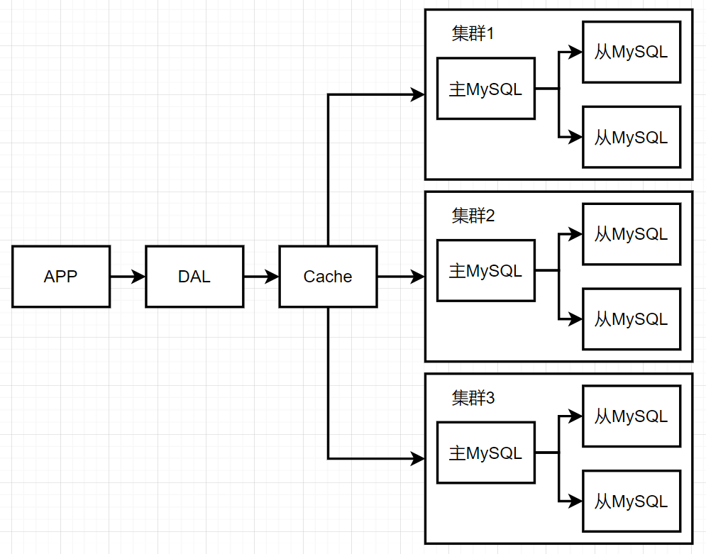
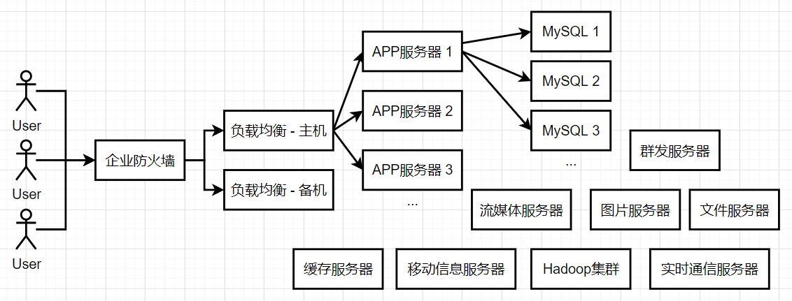
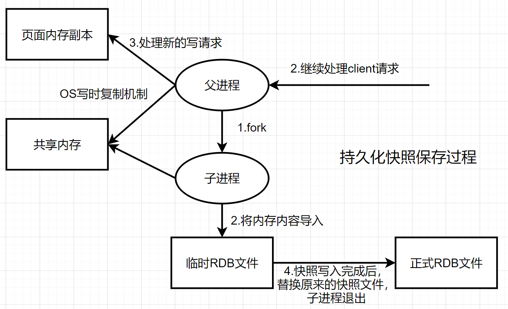
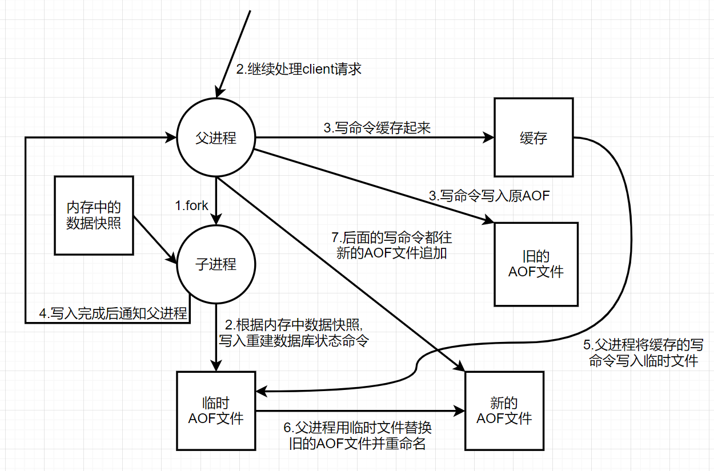
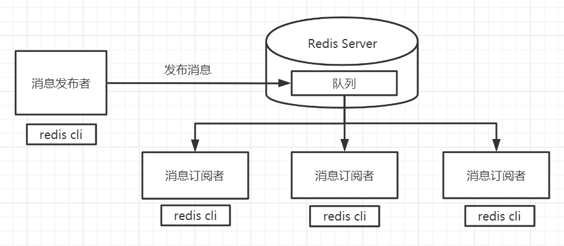
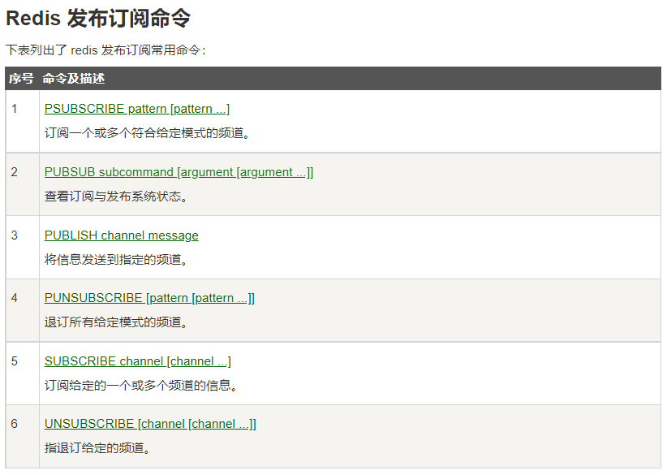
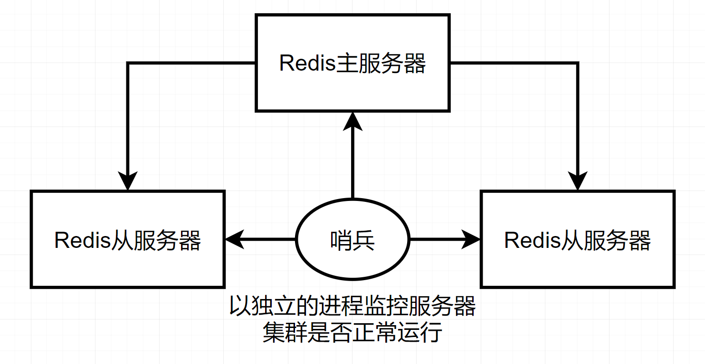
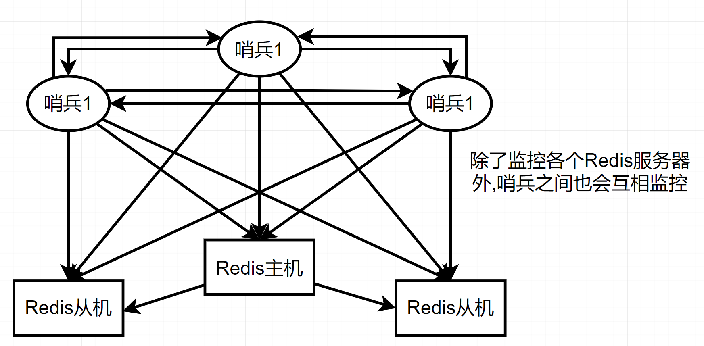

Redis
Nosql
为什么要用Nosql
单机mysql的年代
当时更多使用静态网页,服务器压力很小
APP ==> DAL ==> Mysql
网站的瓶颈在于:
- 数据量太大,存不下
- 数据的索引(B+ Tree),一个机器的内存放不下
- 访问量过高(读写混合),服务器无法承受
Memcached(缓存) + MySQL + 垂直拆分 (读写分离)
网站80%以上的操作都是在读数据,每次读取都去数据库里查询很麻烦,为了减轻数据库压力,我们将查询出来的结果保存在缓存中,使用缓存来保证效率.
发展过程︰优化数据结构和索引–>文件缓存(IO ) —> Memcached(当时最热门的技术!)
==> Mysql 1 (read) <==
|| || Synchronize(同步)
APP ==> DAL ==> Cache ============> Mysql 2 (write)
|| ||
==> Mysql 3 (read) <==
分库分表 + 水平拆分 + MySQL集群
==本质:数据库(读,写)==
早先年MyISAM:表锁,查询时锁定被查询的整个表,高并发下效率很差!
Innodb:行锁
使用分库分表来解决写入的压力.
MySQL的集群很好解决了那时的需求!

现在
数据量大,变化很快(位置信息,音乐,热榜)
MySQL等关系数据库不够用了!
MySQL存储大文件时,表很大,效率就会降低.需要一种数据库来专门处理这种数据,使表变小!
目前一个基本互联网项目的架构:

为什么要用NoSQL!
用户的个人信息,社交网络,地理位置.用户自己产生的数据,用户日志等等爆发试增长!
而NoSQL可以很好的处理以上状况!
什么是NoSQL
==NoSQL (Not Only SQL)==
泛指非关系型数据库!
很多的数据类型用户的个人信息,社交网络,地理位置.这些数据类型的存储不需要一个固定的格式!不需要多月的操作就可以横向扩展的!Map<String, Object>使用键值对来控制!
NoSQL 特点
解耦
方便扩展(数据之间没用关系,很好扩展!)
大数据量高性能(Redis一秒写8万次,读取11万,NoSQL的缓存记录级,是一种细粒度的缓存,性能较高)
数据类型是多样型的(不需要实现设计数据库!随取随用!)
传统的RDBMS和NoSQL
RDBMS(关系型数据库)
- 结构化组织
SQL
数据和关系都存在单独的表中
操作数据操作语言,数据定义语言
严格的一致性
基础的事务
NoSQL
不仅仅是数据
没有固定的查询语言
键值对存储,列存储,文档存储,图形数据库(社交关系)
最终一致性
CAP定理 和 BASE (异地多活)
CAP定理指出，在一个分布式系统中，对于一致性、可用性、分区容错这三个特性，不可能同时满足，而是必须有所舍弃。我们设计分布式系统时，必须在三者之间（尤其是一致性和可用性之间）有所取舍和平衡。
大数据时代的3V与3高
海量Volume
多样Variety
实时Velocity
高并发
高可扩
高性能
真正在公司中的实践: RDBMS + NoSQL 一起使用
NoSQL的四大分类
KV键值对:
- 新浪:Redis
- 美团:Redis+Tair
- 阿里,百度:Redis+memcache
文档型数据库:
- MongoDB
- MongoDB是一个基于分布式文件存储的数据库，C++编写，主要用来处理大量的文档!
- MongoDB是一个介于关系型数据库和非关系型数据中中间的产品! MongoDB是非关系型数据库中功能最丰富，最像关系型数据库的!
- ConthDB
列存储数据库:
- HBase
- 分布式文件系统
图关系数据库:
- 用于存”图”这种数据结构的数据库
- 存放关系
- Neo4j, InfoGrid
Redis入门
什么是Redis
Redis（==Re==mote ==Di==ctionary ==S==erver )，即远程字典服务！
是一个开源的使用ANSI C语言编写、支持网络、可基于内存亦可持久化的日志型、Key-Value数据库，并提供多种语言的API。
redis能干嘛？
内存存储、持久化，内存中是断电即失、所以说持久化很重要（rdb、aof）
效率高，可以用于高速缓存
发布订阅系统
地图信息分析
计时器、计数器
……
特性
多样的数据类型
持久化
集群
事务
……
redis安装
推荐使用linux版本
redis启动与链接与停止
# 首先要将redis-server修改为后台运行
# 将redis.conf中的daemonize no修改为daemonize yes
daemonize no => yes
# ==============================================
redis-server [redis.conf] # 用redis.conf配置文件启动redis-server
redis-cli -p 6379 # 使用命令行交互工具链接redis-server,默认端口号为6379
127.0.0.1:6379> exit # 退出redis命令行交互工具
127.0.0.1:6379> shutdown # 关闭当前链接的redis-server
测试性能
redis-benchmark是一个官方自带的压力测试工具
Redis 性能测试 | 菜鸟教程
基础知识
redis默认有16个数据库
默认使用第0个数据库
127.0.0.1:6379> SELECT 1 # 切换数据库
OK
127.0.0.1:6379[1]> DBSIZE # 查看数据库大小
(integer) 0
127.0.0.1:6379> set name qwq # 设定键值对
OK
127.0.0.1:6379> get name # 取出键对应的值
"qwq"
127.0.0.1:6379> keys * # 查看当前数据库所有key
1) "name"
127.0.0.1:6379> flushall # 清空所有数据库
OK
127.0.0.1:6379> flushdb # 清空当前数据库
OK
redis是单线程的
Redis是很快的，官方表示，Redis是基于内存操作，CPU不是Redis性能瓶颈，Redis的瓶颈是根据机器的内存和网络带宽，既然可以使用单线程来实现，就使用单线程了!
Redis是C语言写的，官方提供的数据为100000+的QPS，完全不比同样是使用key-value的Memecache差
Redis为什么单线程这么快?
核心: redis是将所有的数据全部放在内存中的，所以说使用单线程去操作效率就是最高的，多线程(CPU上下文会切换∶耗时的操作!!!),对于内存系统来说，如果没有上下文切换时的效率就是最高的!
五大数据类型
Redis是一个开源（BSD许可)的，内存中的数据结构存储系统，它可以用作数据库、缓存和消息中间件MQ。它支持多种类型的数据结构，如字符串( strings )，散列( hashes )，列表( lists )，集合( sets )，有序集合( sorted sets）与范围查询，bitmaps , hyperloglogs和地理空间(geospatial ）索引半径查询。Redis内置了复制( replication )，LUA脚本( Lua
scripting)，LRU驱动事件（LRU eviction )，事务 ( transactions）和不同级别的磁盘持久化 ( persistence )，并通过Redis哨兵(Sentinel)和自动分区（Cluster )提供高可用性( high availability )。
Redis命令中心
Redis-Key
127.0.0.1:6379> set name qwq # 设置一个键值对
OK
127.0.0.1:6379> EXISTS name # 查询是否存在某个键
(integer) 1
127.0.0.1:6379> EXISTS qwq
(integer) 0
127.0.0.1:6379> move name 1 # 将指定键值对移动到指定数据库
(integer) 1
127.0.0.1:6379> expire name 10 # 设置指定键值对的过期时间 此处为10秒
(integer) 1
127.0.0.1:6379> ttl name # 查看指定键值对剩余有效时间
(integer) 5
127.0.0.1:6379> ttl name
(integer) 3
127.0.0.1:6379> ttl name
(integer) 2
127.0.0.1:6379> ttl name
(integer) 0
127.0.0.1:6379> ttl name # 有效时间为-2时表示已失效
(integer) -2
127.0.0.1:6379> type age # 查看key所储存的值的类型
string
String
127.0.0.1:6379> set name qwq
OK
127.0.0.1:6379> exist name
(integer) 1
127.0.0.1:6379> append name qqqq # 在字符串后追加字符串
(integer) 7
127.0.0.1:6379> get name
"qwqqqqq"
127.0.0.1:6379> strlen name # 获取字符串长度
(integer) 7
# ==============================
127.0.0.1:6379> set views 0
OK
127.0.0.1:6379> incr views # 加一操作
(integer) 1
127.0.0.1:6379> get views
"1"
127.0.0.1:6379> decr views # 减一操作
(integer) 0
127.0.0.1:6379> get views
"0"
127.0.0.1:6379> incrby views 2 # 设置增长步长
(integer) 2
127.0.0.1:6379> get views
"2"
127.0.0.1:6379> decrby views 3 # 设置减少步长
(integer) -1
127.0.0.1:6379> get views
"-1"
# ===============================
127.0.0.1:6379> set hello "hello world"
OK
127.0.0.1:6379> get hello
"hello world"
127.0.0.1:6379> GETRANGE hello 6 10 # 截取子串
"world"
127.0.0.1:6379> GETRANGE hello 0 -1 # 获取整个字符串,相当于get key
"hello world" # -1表示最后一个字符的下标
127.0.0.1:6379> SETRANGE hello 6 qwqqq # 替换指定位置开始的字符串
(integer) 11
127.0.0.1:6379> get hello
"hello qwqqq"
# ===============================
# setex (set with expire) 设置过期时间
# setnx (set if not exist) 如果不存在就设置,在分布式锁中常常用到
127.0.0.1:6379> SETEX name 10 qwqq
OK
127.0.0.1:6379> SETNX name qwq # 如果存在则设置失败,返回0
(integer) 0
127.0.0.1:6379> ttl name
(integer) -2
127.0.0.1:6379> SETNX name qwq # 如果不存在则设置成功,返回1
(integer) 1
# ===============================
# mset 同时设置多个值
# mget 同时取得多个值
127.0.0.1:6379> mset k1 v1 k2 v2 k3 v3
OK
127.0.0.1:6379> keys *
1) "k1"
2) "k2"
3) "k3"
127.0.0.1:6379> mget k1 k2 k3
1) "v1"
2) "v2"
3) "v3"
127.0.0.1:6379> msetnx k1 v1 k4 v4 # 同时设置多个键值对,该命令为原子性操作,要么全成功,要么全失败
(integer) 0
127.0.0.1:6379> keys *
1) "k1"
2) "k2"
3) "k3"
127.0.0.1:6379> msetnx k4 v4 k5 v5
(integer) 1
127.0.0.1:6379> keys *
1) "k5"
2) "k4"
3) "k1"
4) "k2"
5) "k3"
# ==============================
# getset 先get再set 如果不存在值则返回nil 如果存在则获取原来的值并设置新的值
127.0.0.1:6379> getset name qwq
(nil)
127.0.0.1:6379> keys *
1) "name"
127.0.0.1:6379> get name
"qwq"
127.0.0.1:6379> getset name bbmb
"qwq"
127.0.0.1:6379> get name
"bbmb"
String类型的使用场景:
- 计数器
- 统计多单位的数量
- 粉丝数
- 对象缓存存储
List
基本的数据类型,列表
redis中可以使用list实现栈,队列…
所有list命令都是以l开头的
# =========================================================
# lpush
# rpush
127.0.0.1:6379> lpush list 1 # 将值插入列表头部 left push
(integer) 1
127.0.0.1:6379> lpush list 2 3 4 # 可插入多个值
(integer) 4
127.0.0.1:6379> lrange list 0 -1
1) "4"
2) "3"
3) "2"
4) "1"
127.0.0.1:6379> rpush list 2 3 4 # 将值插入列表尾部 right push
(integer) 7
127.0.0.1:6379> lrange list 0 -1
1) "4"
2) "3"
3) "2"
4) "1"
5) "2"
6) "3"
7) "4"
127.0.0.1:6379>
# =========================================================
# lpop 移除头部的值 可指定数量
# rpop 移除尾部的值 可指定数量
127.0.0.1:6379> lpop list # 移除头部第一个值
"4"
127.0.0.1:6379> lrange list 0 -1
1) "3"
2) "2"
3) "1"
4) "2"
5) "3"
6) "4"
127.0.0.1:6379> rpop list 2 # 移除尾部的两个值
1) "4"
2) "3"
127.0.0.1:6379> lrange list 0 -1
1) "3"
2) "2"
3) "1"
4) "2"
# =========================================================
# lindex 获取指定下标的值 注:下标从0开始!!!
127.0.0.1:6379> LINDEX list 3 #对应上面的 4) "2"
"2"
# =========================================================
# llen key 返回list的长度
127.0.0.1:6379> llen list
(integer) 4
# =========================================================
# lrem key count element 移除list中指定数量的指定元素 返回值为成功移除的元素数量
127.0.0.1:6379> rpush list 1 1 1 1 1 2 2 2 3 4 5 5 6
(integer) 13
127.0.0.1:6379> lrange list 0 -1
1) "1"
2) "1"
3) "1"
4) "1"
5) "1"
6) "2"
7) "2"
8) "2"
9) "3"
10) "4"
11) "5"
12) "5"
13) "6"
127.0.0.1:6379> lrem list 3 1
(integer) 3
127.0.0.1:6379> lrange list 0 -1
1) "1"
2) "1"
3) "2"
4) "2"
5) "2"
6) "3"
7) "4"
8) "5"
9) "5"
10) "6"
# =========================================================
# ltrim key start stop 截断列表,会修改原列表的数据
127.0.0.1:6379> ltrim list 1 5
OK
127.0.0.1:6379> lrange list 0 -1
1) "1"
2) "2"
3) "2"
4) "2"
5) "3"
# =========================================================
# rpoplpush source destination 移除列表最后一个元素,将其添加到一个新的列表的前面
127.0.0.1:6379> rpush list1 1 2 3
(integer) 3
127.0.0.1:6379> rpush list2 4 5
(integer) 2
127.0.0.1:6379> lrange list1 0 -1
1) "1"
2) "2"
3) "3"
127.0.0.1:6379> lrange list2 0 -1
1) "4"
2) "5"
127.0.0.1:6379> RPOPLPUSH list1 list2
"3"
127.0.0.1:6379> lrange list1 0 -1
1) "1"
2) "2"
127.0.0.1:6379> lrange list2 0 -1
1) "3"
2) "4"
3) "5"
# =========================================================
# lset key index element 将列表中指定下标的值替换成另外一个值 列表不存在与下标不存在的时候均会报错
127.0.0.1:6379> exists list
(integer) 0
127.0.0.1:6379> lrange list 0 -1
(empty array)
127.0.0.1:6379> lset list 0 1
(error) ERR no such key
127.0.0.1:6379> rpush list qwq
(integer) 1
127.0.0.1:6379> lset list 0 bmb
OK
127.0.0.1:6379> lrange list 0 -1
1) "bmb"
127.0.0.1:6379> lset list 1 bbmb
(error) ERR index out of range
# =========================================================
# linsert key BEFORE|AFTER pivot element pivot指想要插入位置的值
127.0.0.1:6379> rpush list "hello" "world"
(integer) 2
127.0.0.1:6379> lrange list 0 -1
1) "hello"
2) "world"
127.0.0.1:6379> linsert list after hello my
(integer) 3
127.0.0.1:6379> lrange list 0 -1
1) "hello"
2) "my"
3) "world"
小结
- list实际上是一个链表
- 如果key不存在,创建新链表
- 如果key存在,新增内容
- 如果移除了所有值，空链表，也代表不存在!
- 在两边插入或者改动值，效率最高!中间元素，相对来说效率会低一点~
Set
set 无序不重复集合
sadd key member [member ...] # 向set中添加member
smembers key # 输出set中的所有member
sismember key member # 判断set中是否存在该member
scard key # 获取set集合元素个数
srem key member [member ...] # 移除set中的指定member
srandmember key [count] # 随机取出set中的member 可指定数量
spop key [count] # 随机删除set中的member 可指定数量
smove source destination member # 移动指定的元素
sdiff key [key ...] # 返回第一个set与其他set之间的差异,也就是第一个set中独有的元素 差集
sinter key [key ...] # 返回多个set的交集
sunion key [key ...] # 返回多个set的并集
Hash
Map集合 key - map map中存储键值对
有点类似json对象的存储
HDEL key field [field ...]
summary: Delete one or more hash fields
HEXISTS key field
summary: Determine if a hash field exists
HGET key field
summary: Get the value of a hash field
HGETALL key
summary: Get all the fields and values in a hash
HINCRBY key field increment
summary: Increment the integer value of a hash field by the given number
HINCRBYFLOAT key field increment
summary: Increment the float value of a hash field by the given amount
HKEYS key
summary: Get all the fields in a hash
HLEN key
summary: Get the number of fields in a hash
HMGET key field [field ...]
summary: Get the values of all the given hash fields
# 过时 可直接使用hset设置多个key-value
HMSET key field value [field value ...]
summary: Set multiple hash fields to multiple values
HRANDFIELD key [count [WITHVALUES]]
summary: Get one or multiple random fields from a hash
HSCAN key cursor [MATCH pattern] [COUNT count]
summary: Incrementally iterate hash fields and associated values
HSET key field value [field value ...]
summary: Set the string value of a hash field
HSETNX key field value
summary: Set the value of a hash field, only if the field does not exist
HSTRLEN key field
summary: Get the length of the value of a hash field
HVALS key
summary: Get all the values in a hash
hash更适合对象的存储,string更适合字符串存储
Zset
官方命名为sorted_set,意为有序集合
在添加member时需要写入权重,根据权重排序
BZPOPMAX key [key ...] timeout
summary: Remove and return the member with the highest score from one or more sorted sets, or block until one is available
BZPOPMIN key [key ...] timeout
summary: Remove and return the member with the lowest score from one or more sorted sets, or block until one is available
ZADD key [NX|XX] [GT|LT] [CH] [INCR] score member [score member ...]
summary: Add one or more members to a sorted set, or update its score if it already exists
XX: 仅仅更新存在的成员，不添加新成员。
NX: 不更新存在的成员。只添加新成员。
CH: 修改返回值为发生变化的成员总数，原始是返回新添加成员的总数 (CH 是 changed 的意思)。更改的元素是新添加的成员，已经存在的成员更新分数。 所以在命令中指定的成员有相同的分数将不被计算在内。注：在通常情况下，ZADD返回值只计算新添加成员的数量。
INCR: 当ZADD指定这个选项时，成员的操作就等同ZINCRBY命令，对成员的分数进行递增操作。
ZCARD key
summary: Get the number of members in a sorted set
ZCOUNT key min max
summary: Count the members in a sorted set with scores within the given values
ZDIFF numkeys key [key ...] [WITHSCORES]
summary: Subtract multiple sorted sets
ZDIFFSTORE destination numkeys key [key ...]
summary: Subtract multiple sorted sets and store the resulting sorted set in a new key
ZINCRBY key increment member
summary: Increment the score of a member in a sorted set
ZINTER numkeys key [key ...] [WEIGHTS weight] [AGGREGATE SUM|MIN|MAX] [WITHSCORES]
summary: Intersect multiple sorted sets
ZINTERSTORE destination numkeys key [key ...] [WEIGHTS weight] [AGGREGATE SUM|MIN|MAX]
summary: Intersect multiple sorted sets and store the resulting sorted set in a new key
ZLEXCOUNT key min max
summary: Count the number of members in a sorted set between a given lexicographical range
ZMSCORE key member [member ...]
summary: Get the score associated with the given members in a sorted set
ZPOPMAX key [count]
summary: Remove and return members with the highest scores in a sorted set
ZPOPMIN key [count]
summary: Remove and return members with the lowest scores in a sorted set
ZRANDMEMBER key [count [WITHSCORES]]
summary: Get one or multiple random elements from a sorted set
ZRANGE key min max [BYSCORE|BYLEX] [REV] [LIMIT offset count] [WITHSCORES]
summary: Return a range of members in a sorted set
ZRANGEBYLEX key min max [LIMIT offset count]
summary: Return a range of members in a sorted set, by lexicographical range
ZRANGEBYSCORE key min max [WITHSCORES] [LIMIT offset count]
summary: Return a range of members in a sorted set, by score
ZRANGESTORE dst src min max [BYSCORE|BYLEX] [REV] [LIMIT offset count]
summary: Store a range of members from sorted set into another key
ZRANK key member
summary: Determine the index of a member in a sorted set
ZREM key member [member ...]
summary: Remove one or more members from a sorted set
ZREMRANGEBYLEX key min max
summary: Remove all members in a sorted set between the given lexicographical range
ZREMRANGEBYRANK key start stop
summary: Remove all members in a sorted set within the given indexes
ZREMRANGEBYSCORE key min max
summary: Remove all members in a sorted set within the given scores
ZREVRANGE key start stop [WITHSCORES]
summary: Return a range of members in a sorted set, by index, with scores ordered from high to low
ZREVRANGEBYLEX key max min [LIMIT offset count]
summary: Return a range of members in a sorted set, by lexicographical range, ordered from higher to lower strings.
ZREVRANGEBYSCORE key max min [WITHSCORES] [LIMIT offset count]
summary: Return a range of members in a sorted set, by score, with scores ordered from high to low
ZREVRANK key member
summary: Determine the index of a member in a sorted set, with scores ordered from high to low
ZSCAN key cursor [MATCH pattern] [COUNT count]
summary: Incrementally iterate sorted sets elements and associated scores
ZSCORE key member
summary: Get the score associated with the given member in a sorted set
ZUNION numkeys key [key ...] [WEIGHTS weight] [AGGREGATE SUM|MIN|MAX] [WITHSCORES]
summary: Add multiple sorted sets
ZUNIONSTORE destination numkeys key [key ...] [WEIGHTS weight] [AGGREGATE SUM|MIN|MAX]
summary: Add multiple sorted sets and store the resulting sorted set in a new key
案例思路:
- set 排序存储班级成绩表，工资表排序!
- 普通消息，1，重要消息2，带权重进行判断!
- 排行榜应用实现，取Top N测试!
三种特殊数据类型
geospatial
hyperloglog
bitmaps
Redis事务
Redis事务的本质:一组命令的集合！一个事务中的所有命令都会被序列化，在事务执行过程的中，会按照顺序执行！
==Redis事务不保证原子性，它的单条命令保证原子性，但事务不保证原子性！==
一次性、顺序性、排他性！执行一些列的命令!
==Redis事务没有没有隔离级别的概念!==
所有的命令在入队时，并没有直接被执行，而是在队列中等待执行。只有发起执行命令的时候才会执行！ Exec
redis的事务∶
- 开启事务(multi)
- 命令入队(…)
- 执行事务(exec)/放弃事务(discard)
错误类型
- 命令语法有误(编译型错误)
- 如命令敲错了
- 事务中所有命令都不会被执行
- 命令逻辑错误(运行时错误)
- 如多次设置同一个key
- 执行命令时其他没错的命令可以正常执行
- 错误命令会报错
Redis的事务更加像是一种命令的批处理，批量执行命令。
监视
- 悲观锁:
- 很悲观，认为什么时候都会出问题，无论做什么都会加锁！操作数据时锁定数据，操作完毕后解锁数据。锁定期间其他线程无法操作该数据。
- 乐观锁︰
- 很乐观，认为什么时候都不会出问题，所以不会上锁！取数据时直接取出数据，更新数据的时候去判断一下，在此期间是否有人修改过这个数据，若没人修改则提交修改，若有人修改则回滚返回错误信息。
- MySQL添加字段version通过对比version版本实现乐观锁
redis监视：
事务正常执行成功：
127.0.0.1:6379> set money 100
OK
127.0.0.1:6379> set out 0
OK
127.0.0.1:6379> watch money # 监视money对象
OK
127.0.0.1:6379> multi # 事务正常结束，在此期间没有其他线程改变money的值，就正常执行成功
OK
127.0.0.1:6379(TX)> decrby money 20
QUEUED
127.0.0.1:6379(TX)> incrby out 20
QUEUED
127.0.0.1:6379(TX)> exec
1) (integer) 80
2) (integer) 20
# 事务结束后监视会自动取消
模拟插队修改：
终端1：
127.0.0.1:6379> watch money
OK
127.0.0.1:6379> MULTI
OK
127.0.0.1:6379(TX)> DECRBY money 10
QUEUED
127.0.0.1:6379(TX)> INCRBY out 10
QUEUED
127.0.0.1:6379(TX)> # 先不执行事务，使用终端2模拟插队
终端2：
127.0.0.1:6379> get money
"80"
127.0.0.1:6379> INCRBY money 1000
(integer) 1080
127.0.0.1:6379> # 终端2插队修改money成功
此时终端1执行事务：
127.0.0.1:6379(TX)> exec
(nil) # 返回nil，表示整个事务执行失败，事务中的所有命令均不会执行
# ===========================执行失败后的处理方法==============================
127.0.0.1:6379> UNWATCH # 取消监视
OK
127.0.0.1:6379> WATCH money # 重新监视最新值
OK
127.0.0.1:6379> MULTI
OK
127.0.0.1:6379(TX)> DECRBY monsy 100
QUEUED
127.0.0.1:6379(TX)> INCRBY out 100
QUEUED
127.0.0.1:6379(TX)> exec # 执行事务，若监视的值未改变则执行成功
1) (integer) 980
2) (integer) 110
Jedis
开始
导包：
<dependency>
<groupId>redis.clients</groupId>
<artifactId>jedis</artifactId>
<version>3.6.3</version>
</dependency>
<dependency>
<groupId>com.alibaba</groupId>
<artifactId>fastjson</artifactId>
<version>1.2.62</version>
</dependency>
<dependency>
<groupId>org.slf4j</groupId>
<artifactId>slf4j-nop</artifactId>
<version>1.7.5</version>
</dependency>
连接Redis：
public static void main(String[] args) {
// new 一个jedis对象
Jedis jedis = new Jedis("localhost", 6379);
// jedis的命令与redis中指令一致
System.out.println(jedis.ping());
}
输出：
PONG
事务
public class TXTest {
public static void main(String[] args) {
Jedis jedis = new Jedis("localhost", 6379);
JSONObject object = new JSONObject();
object.put("name","qwq");
object.put("level","菜鸡");
jedis.flushDB();
// 开启事务
Transaction transaction = jedis.multi();
try {
transaction.set("user1", object.toJSONString());
transaction.set("user2", object.toJSONString());
} catch (Exception e){
transaction.discard();
e.printStackTrace();
}finally {
System.out.println(jedis.mget("user1", "user2"));
jedis.close();
}
}
}
springboot整合
SpringBoot操作数据：spring-data jpa jdbc mongodb redis！
SpringData也是和SpringBoot齐名的项目！
说明︰在SpringBoot2.x之后，原来使用的jedis被替换为了lettuce
jedis :采用的直连，多个线程操作的话，是不安全的，如果想要避免不安全的，使用jedis pool连接池!更像BIO模式
lettuce :采用netty,实例可以再多个线程中进行共享，不存在线程不安全的情况!可以减少线程数据了，更像Nio模式
源码分析：
@Bean
@ConditionalOnMissingBean(name = "redisTemplate") //若没有redisTemplate才使用默认类，我们可以自己手动实现redisTemplate来替换默认
@ConditionalOnSingleCandidate(RedisConnectionFactory.class)
public RedisTemplate<Object, Object> redisTemplate(RedisConnectionFactory redisConnectionFactory) {
// 默认的 RedisTemplate 没有过多的设置 ，redis保存对象都是需要序列化的
// 两个泛型都是 Object ，使用需要强制类型转换
RedisTemplate<Object, Object> template = new RedisTemplate<>();
template.setConnectionFactory(redisConnectionFactory);
return template;
}
@Bean
@ConditionalOnMissingBean // 由于string是redis中最常使用的类型，所以说单独提出来了一个bean!
@ConditionalOnSingleCandidate(RedisConnectionFactory.class)
public StringRedisTemplate stringRedisTemplate(RedisConnectionFactory redisConnectionFactory) {
StringRedisTemplate template = new StringRedisTemplate();
template.setConnectionFactory(redisConnectionFactory);
return template;
}
整合：
导入依赖
<dependency> <groupId>org.springframework.boot</groupId> <artifactId>spring-boot-starter-data-redis</artifactId> </dependency>配置链接
spring: redis: host: localhost port: 6379编写测试类
@SpringBootTest class DataApplicationTests { @Autowired private RedisTemplate redisTemplate; @Test void contextLoads() { // 操作String opsForValue() // 操作List opsForList() // 操作Set opsForSet() // 操作Hash opsForHash() // ... //常用方法可以直接通过redisTemplate进行操作, 如事务等... redisTemplate.opsForValue().set("name","qwq"); System.out.println(redisTemplate.opsForValue().get("name")); } }
redisConfig默认使用JDK序列化（中文会转义成编码），我们可能使用json来序列化（序列化:把对象转化为可传输的字节序列过程称为序列化）
自定义序列化
@Component
@Data
@AllArgsConstructor
@NoArgsConstructor
// 在企业中,一般所有 pojo 类都会序列化
public class User implements Serializable {
private String id;
private String name;
}
RedisConfig.java:
@Configuration
public class RedisConfig {
//自定义RedisTemplate
@Bean
public RedisTemplate<String, Object> redisTemplate(RedisConnectionFactory redisConnectionFactory) {
RedisTemplate<String, Object> template = new RedisTemplate<>();
template.setConnectionFactory(redisConnectionFactory);
//Json序列化配置
Jackson2JsonRedisSerializer jsonRedisSerializer = new Jackson2JsonRedisSerializer(Object.class);
ObjectMapper objectMapper = new ObjectMapper();
objectMapper.setVisibility(PropertyAccessor.ALL, JsonAutoDetect.Visibility.ANY);
objectMapper.activateDefaultTyping(LaissezFaireSubTypeValidator.instance,ObjectMapper.DefaultTyping.NON_FINAL);
jsonRedisSerializer.setObjectMapper(objectMapper);
// String的序列化
StringRedisSerializer stringRedisSerializer = new StringRedisSerializer();
// key采用String的序列化方式
template.setKeySerializer(stringRedisSerializer);
// Hash的key采用String的序列化方式
template.setHashKeySerializer(stringRedisSerializer);
// value的序列化采用Jackson
template.setValueSerializer(jsonRedisSerializer);
// Hash的value序列化方式采用Jackson
template.setHashValueSerializer(jsonRedisSerializer);
template.afterPropertiesSet();
return template;
}
}
测试：
@Test
void redisSet() throws JsonProcessingException {
User user = new User("1", "qwq");
redisTemplate.opsForValue().set("user",user);
System.out.println(redisTemplate.opsForValue().get("user"));
}
输出：
User(id=1, name=qwq) // 这里实际上自动将对象序列化为json字符串后取出时反序列化为了User对象
127.0.0.1:6379> get user
"[\"com.wang.data.pojo.User\",{\"id\":\"1\",\"name\":\"qwq\"}]"
Redis工具类
spring将redis封装成模板，将常用命令分类，但操作起来代码非常繁琐，于是我们一般使用工具类而不是直接使用redisTemplate类进行操作。
RedisUtil将redisTemplate封装成了类似于Jedis的操作。
RedisUtil.java
import org.springframework.data.redis.core.RedisTemplate;
import org.springframework.stereotype.Component;
import org.springframework.util.CollectionUtils;
import javax.annotation.Resource;
import java.util.Collection;
import java.util.List;
import java.util.Map;
import java.util.Set;
import java.util.concurrent.TimeUnit;
@Component
@SuppressWarnings("all")
public final class RedisUtils {
@Resource
private RedisTemplate<String, Object> redisTemplate;
// =============================common============================
/**
* 指定缓存失效时间
*
* @param key 键
* @param time 时间(秒)
*/
public boolean expire(String key, long time, TimeUnit timeUnit) {
try {
if (time > 0) {
redisTemplate.expire(key, time, timeUnit);
}
return true;
} catch (Exception e) {
e.printStackTrace();
return false;
}
}
/**
* 根据key 获取过期时间
*
* @param key 键 不能为null
* @return 时间(秒) 返回0代表为永久有效
*/
public long getExpire(String key) {
return redisTemplate.getExpire(key, TimeUnit.SECONDS);
}
/**
* 判断key是否存在
*
* @param key 键
* @return true 存在 false不存在
*/
public boolean hasKey(String key) {
try {
return redisTemplate.hasKey(key);
} catch (Exception e) {
e.printStackTrace();
return false;
}
}
/**
* 删除缓存
*
* @param key 可以传一个值 或多个
*/
@SuppressWarnings("unchecked")
public void del(String... key) {
if (key != null && key.length > 0) {
if (key.length == 1) {
redisTemplate.delete(key[0]);
} else {
redisTemplate.delete((Collection<String>) CollectionUtils.arrayToList(key));
}
}
}
// ============================String=============================
/**
* 普通缓存获取
*
* @param key 键
* @return 值
*/
public Object get(String key) {
return key == null ? null : redisTemplate.opsForValue().get(key);
}
/**
* 普通缓存放入
*
* @param key 键
* @param value 值
* @return true成功 false失败
*/
public boolean set(String key, Object value) {
try {
redisTemplate.opsForValue().set(key, value);
return true;
} catch (Exception e) {
e.printStackTrace();
return false;
}
}
/**
* 普通缓存放入并设置时间
*
* @param key 键
* @param value 值
* @param time 时间(秒) time要大于0 如果time小于等于0 将设置无限期
* @return true成功 false 失败
*/
public boolean set(String key, Object value, long time) {
try {
if (time > 0) {
redisTemplate.opsForValue().set(key, value, time, TimeUnit.SECONDS);
} else {
set(key, value);
}
return true;
} catch (Exception e) {
e.printStackTrace();
return false;
}
}
/**
* 递增
*
* @param key 键
* @param delta 要增加几(大于0)
*/
public long incr(String key, long delta) {
if (delta < 0) {
throw new RuntimeException("递增因子必须大于0");
}
return redisTemplate.opsForValue().increment(key, delta);
}
/**
* 递减
*
* @param key 键
* @param delta 要减少几(小于0)
*/
public long decr(String key, long delta) {
if (delta < 0) {
throw new RuntimeException("递减因子必须大于0");
}
return redisTemplate.opsForValue().increment(key, -delta);
}
// ================================Map=================================
/**
* HashGet
*
* @param key 键 不能为null
* @param item 项 不能为null
*/
public Object hget(String key, String item) {
return redisTemplate.opsForHash().get(key, item);
}
/**
* 获取hashKey对应的所有键值
*
* @param key 键
* @return 对应的多个键值
*/
public Map<Object, Object> hmget(String key) {
return redisTemplate.opsForHash().entries(key);
}
/**
* HashSet
*
* @param key 键
* @param map 对应多个键值
*/
public boolean hmset(String key, Map<String, Object> map) {
try {
redisTemplate.opsForHash().putAll(key, map);
return true;
} catch (Exception e) {
e.printStackTrace();
return false;
}
}
/**
* HashSet 并设置时间
*
* @param key 键
* @param map 对应多个键值
* @param time 时间(秒)
* @return true成功 false失败
*/
public boolean hmset(String key, Map<String, Object> map, long time, TimeUnit timeUnit) {
try {
redisTemplate.opsForHash().putAll(key, map);
if (time > 0) {
expire(key, time, timeUnit);
}
return true;
} catch (Exception e) {
e.printStackTrace();
return false;
}
}
/**
* 向一张hash表中放入数据,如果不存在将创建
*
* @param key 键
* @param item 项
* @param value 值
* @return true 成功 false失败
*/
public boolean hset(String key, String item, Object value) {
try {
redisTemplate.opsForHash().put(key, item, value);
return true;
} catch (Exception e) {
e.printStackTrace();
return false;
}
}
/**
* 向一张hash表中放入数据,如果不存在将创建
*
* @param key 键
* @param item 项
* @param value 值
* @param time 时间(秒) 注意:如果已存在的hash表有时间,这里将会替换原有的时间
* @return true 成功 false失败
*/
public boolean hset(String key, String item, Object value, long time, TimeUnit timeUnit) {
try {
redisTemplate.opsForHash().put(key, item, value);
if (time > 0) {
expire(key, time, timeUnit);
}
return true;
} catch (Exception e) {
e.printStackTrace();
return false;
}
}
/**
* 删除hash表中的值
*
* @param key 键 不能为null
* @param item 项 可以使多个 不能为null
*/
public void hdel(String key, Object... item) {
redisTemplate.opsForHash().delete(key, item);
}
/**
* 判断hash表中是否有该项的值
*
* @param key 键 不能为null
* @param item 项 不能为null
* @return true 存在 false不存在
*/
public boolean hHasKey(String key, String item) {
return redisTemplate.opsForHash().hasKey(key, item);
}
/**
* hash递增 如果不存在,就会创建一个 并把新增后的值返回
*
* @param key 键
* @param item 项
* @param by 要增加几(大于0)
*/
public double hincr(String key, String item, double by) {
return redisTemplate.opsForHash().increment(key, item, by);
}
/**
* hash递减
*
* @param key 键
* @param item 项
* @param by 要减少记(小于0)
*/
public double hdecr(String key, String item, double by) {
return redisTemplate.opsForHash().increment(key, item, -by);
}
// ============================set=============================
/**
* 根据key获取Set中的所有值
*
* @param key 键
*/
public Set<Object> sGet(String key) {
try {
return redisTemplate.opsForSet().members(key);
} catch (Exception e) {
e.printStackTrace();
return null;
}
}
/**
* 根据value从一个set中查询,是否存在
*
* @param key 键
* @param value 值
* @return true 存在 false不存在
*/
public boolean sHasKey(String key, Object value) {
try {
return redisTemplate.opsForSet().isMember(key, value);
} catch (Exception e) {
e.printStackTrace();
return false;
}
}
/**
* 将数据放入set缓存
*
* @param key 键
* @param values 值 可以是多个
* @return 成功个数
*/
public long sSet(String key, Object... values) {
try {
return redisTemplate.opsForSet().add(key, values);
} catch (Exception e) {
e.printStackTrace();
return 0;
}
}
/**
* 将set数据放入缓存
*
* @param key 键
* @param time 时间(秒)
* @param values 值 可以是多个
* @return 成功个数
*/
public long sSetAndTime(String key, long time, TimeUnit timeUnit, Object... values) {
try {
Long count = redisTemplate.opsForSet().add(key, values);
if (time > 0) {
expire(key, time, timeUnit);
}
return count;
} catch (Exception e) {
e.printStackTrace();
return 0;
}
}
/**
* 获取set缓存的长度
*
* @param key 键
*/
public long sGetSetSize(String key) {
try {
return redisTemplate.opsForSet().size(key);
} catch (Exception e) {
e.printStackTrace();
return 0;
}
}
/**
* 移除值为value的
*
* @param key 键
* @param values 值 可以是多个
* @return 移除的个数
*/
public long setRemove(String key, Object... values) {
try {
Long count = redisTemplate.opsForSet().remove(key, values);
return count;
} catch (Exception e) {
e.printStackTrace();
return 0;
}
}
// ===============================list=================================
/**
* 获取list缓存的内容
*
* @param key 键
* @param start 开始
* @param end 结束 0 到 -1代表所有值
*/
public List<Object> lGet(String key, long start, long end) {
try {
return redisTemplate.opsForList().range(key, start, end);
} catch (Exception e) {
e.printStackTrace();
return null;
}
}
/**
* 获取list缓存的长度
*
* @param key 键
*/
public long lGetListSize(String key) {
try {
return redisTemplate.opsForList().size(key);
} catch (Exception e) {
e.printStackTrace();
return 0;
}
}
/**
* 通过索引 获取list中的值
*
* @param key 键
* @param index 索引 index>=0时， 0 表头，1 第二个元素，依次类推；index<0时，-1，表尾，-2倒数第二个元素，依次类推
*/
public Object lGetIndex(String key, long index) {
try {
return redisTemplate.opsForList().index(key, index);
} catch (Exception e) {
e.printStackTrace();
return null;
}
}
/**
* 将list放入缓存
*
* @param key 键
* @param value 值
*/
public boolean lSet(String key, Object value) {
try {
redisTemplate.opsForList().rightPush(key, value);
return true;
} catch (Exception e) {
e.printStackTrace();
return false;
}
}
/**
* 将list放入缓存
*
* @param key 键
* @param value 值
* @param time 时间(秒)
*/
public boolean lSet(String key, Object value, long time,TimeUnit timeUnit) {
try {
redisTemplate.opsForList().rightPush(key, value);
if (time > 0) {
expire(key, time,timeUnit);
}
return true;
} catch (Exception e) {
e.printStackTrace();
return false;
}
}
/**
* 将list放入缓存
*
* @param key 键
* @param value 值
* @return
*/
public boolean lSet(String key, List<Object> value) {
try {
redisTemplate.opsForList().rightPushAll(key, value);
return true;
} catch (Exception e) {
e.printStackTrace();
return false;
}
}
/**
* 将list放入缓存
*
* @param key 键
* @param value 值
* @param time 时间(秒)
* @return
*/
public boolean lSet(String key, List<Object> value, long time,TimeUnit timeUnit) {
try {
redisTemplate.opsForList().rightPushAll(key, value);
if (time > 0) {
expire(key, time,timeUnit);
}
return true;
} catch (Exception e) {
e.printStackTrace();
return false;
}
}
/**
* 根据索引修改list中的某条数据
*
* @param key 键
* @param index 索引
* @param value 值
* @return
*/
public boolean lUpdateIndex(String key, long index, Object value) {
try {
redisTemplate.opsForList().set(key, index, value);
return true;
} catch (Exception e) {
e.printStackTrace();
return false;
}
}
/**
* 移除N个值为value
*
* @param key 键
* @param count 移除多少个
* @param value 值
* @return 移除的个数
*/
public long lRemove(String key, long count, Object value) {
try {
Long remove = redisTemplate.opsForList().remove(key, count, value);
return remove;
} catch (Exception e) {
e.printStackTrace();
return 0;
}
}
// ===============================HyperLogLog=================================
public long pfadd(String key, String value) {
return redisTemplate.opsForHyperLogLog().add(key, value);
}
public long pfcount(String key) {
return redisTemplate.opsForHyperLogLog().size(key);
}
public void pfremove(String key) {
redisTemplate.opsForHyperLogLog().delete(key);
}
public void pfmerge(String key1, String key2) {
redisTemplate.opsForHyperLogLog().union(key1, key2);
}
}
Redis.config详解
unit单位
# Redis configuration file example.
#
# Note that in order to read the configuration file, Redis must be
# started with the file path as first argument:
#
# ./redis-server /path/to/redis.conf
# Note on units: when memory size is needed, it is possible to specify
# it in the usual form of 1k 5GB 4M and so forth:
#
# 1k => 1000 bytes
# 1kb => 1024 bytes
# 1m => 1000000 bytes
# 1mb => 1024*1024 bytes
# 1g => 1000000000 bytes
# 1gb => 1024*1024*1024 bytes
#
# units are case insensitive so 1GB 1Gb 1gB are all the same.
units单位对大小写不敏感
include
################################## INCLUDES ###################################
# Include one or more other config files here. This is useful if you
# have a standard template that goes to all Redis servers but also need
# to customize a few per-server settings. Include files can include
# other files, so use this wisely.
#
# Note that option "include" won't be rewritten by command "CONFIG REWRITE"
# from admin or Redis Sentinel. Since Redis always uses the last processed
# line as value of a configuration directive, you'd better put includes
# at the beginning of this file to avoid overwriting config change at runtime.
#
# If instead you are interested in using includes to override configuration
# options, it is better to use include as the last line.
#
# include /path/to/local.conf
# include /path/to/other.conf
包含:可以合并一些其他配置文件
network
################################## NETWORK #####################################
# By default, if no "bind" configuration directive is specified, Redis listens
# for connections from all available network interfaces on the host machine.
# It is possible to listen to just one or multiple selected interfaces using
# the "bind" configuration directive, followed by one or more IP addresses.
# Each address can be prefixed by "-", which means that redis will not fail to
# start if the address is not available. Being not available only refers to
# addresses that does not correspond to any network interfece. Addresses that
# are already in use will always fail, and unsupported protocols will always BE
# silently skipped.
#
# Examples:
#
# bind 192.168.1.100 10.0.0.1 # listens on two specific IPv4 addresses
# bind 127.0.0.1 ::1 # listens on loopback IPv4 and IPv6
# bind * -::* # like the default, all available interfaces
#
# ~~~ WARNING ~~~ If the computer running Redis is directly exposed to the
# internet, binding to all the interfaces is dangerous and will expose the
# instance to everybody on the internet. So by default we uncomment the
# following bind directive, that will force Redis to listen only on the
# IPv4 and IPv6 (if available) loopback interface addresses (this means Redis
# will only be able to accept client connections from the same host that it is
# running on).
#
# IF YOU ARE SURE YOU WANT YOUR INSTANCE TO LISTEN TO ALL THE INTERFACES
# JUST COMMENT OUT THE FOLLOWING LINE.
# ~~~~~~~~~~~~~~~~~~~~~~~~~~~~~~~~~~~~~~~~~~~~~~~~~~~~~~~~~~~~~~~~~~~~~~~~
bind 127.0.0.1 -::1 # 绑定的ip
# Protected mode is a layer of security protection, in order to avoid that
# Redis instances left open on the internet are accessed and exploited.
#
# When protected mode is on and if:
#
# 1) The server is not binding explicitly to a set of addresses using the
# "bind" directive.
# 2) No password is configured.
#
# The server only accepts connections from clients connecting from the
# IPv4 and IPv6 loopback addresses 127.0.0.1 and ::1, and from Unix domain
# sockets.
#
# By default protected mode is enabled. You should disable it only if
# you are sure you want clients from other hosts to connect to Redis
# even if no authentication is configured, nor a specific set of interfaces
# are explicitly listed using the "bind" directive.
protected-mode yes # 是否受保护的模式
# Accept connections on the specified port, default is 6379 (IANA #815344).
# If port 0 is specified Redis will not listen on a TCP socket.
port 6379 # 修改端口
# TCP listen() backlog.
#
# In high requests-per-second environments you need a high backlog in order
# to avoid slow clients connection issues. Note that the Linux kernel
# will silently truncate it to the value of /proc/sys/net/core/somaxconn so
# make sure to raise both the value of somaxconn and tcp_max_syn_backlog
# in order to get the desired effect.
tcp-backlog 511
# Unix socket.
#
# Specify the path for the Unix socket that will be used to listen for
# incoming connections. There is no default, so Redis will not listen
# on a unix socket when not specified.
#
# unixsocket /run/redis.sock
# unixsocketperm 700
# Close the connection after a client is idle for N seconds (0 to disable)
timeout 0
# TCP keepalive.
#
# If non-zero, use SO_KEEPALIVE to send TCP ACKs to clients in absence
# of communication. This is useful for two reasons:
#
# 1) Detect dead peers.
# 2) Force network equipment in the middle to consider the connection to be
# alive.
#
# On Linux, the specified value (in seconds) is the period used to send ACKs.
# Note that to close the connection the double of the time is needed.
# On other kernels the period depends on the kernel configuration.
#
# A reasonable value for this option is 300 seconds, which is the new
# Redis default starting with Redis 3.2.1.
tcp-keepalive 300
通用
################################# GENERAL #####################################
# By default Redis does not run as a daemon. Use 'yes' if you need it.
# Note that Redis will write a pid file in /var/run/redis.pid when daemonized.
# When Redis is supervised by upstart or systemd, this parameter has no impact.
daemonize yes # 以守护进程模式运行，即后台运行。默认为No，需要修改为yes。
# If you run Redis from upstart or systemd, Redis can interact with your
# supervision tree. Options:
# supervised no - no supervision interaction
# supervised upstart - signal upstart by putting Redis into SIGSTOP mode
# requires "expect stop" in your upstart job config
# supervised systemd - signal systemd by writing READY=1 to $NOTIFY_SOCKET
# on startup, and updating Redis status on a regular
# basis.
# supervised auto - detect upstart or systemd method based on
# UPSTART_JOB or NOTIFY_SOCKET environment variables
# Note: these supervision methods only signal "process is ready."
# They do not enable continuous pings back to your supervisor.
#
# The default is "no". To run under upstart/systemd, you can simply uncomment
# the line below:
#
# supervised auto
# If a pid file is specified, Redis writes it where specified at startup
# and removes it at exit.
#
# When the server runs non daemonized, no pid file is created if none is
# specified in the configuration. When the server is daemonized, the pid file
# is used even if not specified, defaulting to "/var/run/redis.pid".
#
# Creating a pid file is best effort: if Redis is not able to create it
# nothing bad happens, the server will start and run normally.
#
# Note that on modern Linux systems "/run/redis.pid" is more conforming
# and should be used instead.
pidfile /var/run/redis_6379.pid # 如果以后台方式运行，我们需要指定一个pid进程文件
# Specify the server verbosity level.
# This can be one of:
# debug (a lot of information, useful for development/testing)
# verbose (many rarely useful info, but not a mess like the debug level)
# notice (moderately verbose, what you want in production probably) 生产环境使用
# warning (only very important / critical messages are logged) 非常关键的信息被记录
loglevel notice # 日志级别
# Specify the log file name. Also the empty string can be used to force
# Redis to log on the standard output. Note that if you use standard
# output for logging but daemonize, logs will be sent to /dev/null
logfile "" # 日志生成位置与文件名 为空则输出到标准输出
# To enable logging to the system logger, just set 'syslog-enabled' to yes,
# and optionally update the other syslog parameters to suit your needs.
# syslog-enabled no
# Specify the syslog identity.
# syslog-ident redis
# Specify the syslog facility. Must be USER or between LOCAL0-LOCAL7.
# syslog-facility local0
# To disable the built in crash log, which will possibly produce cleaner core
# dumps when they are needed, uncomment the following:
#
# crash-log-enabled no
# To disable the fast memory check that's run as part of the crash log, which
# will possibly let redis terminate sooner, uncomment the following:
#
# crash-memcheck-enabled no
# Set the number of databases. The default database is DB 0, you can select
# a different one on a per-connection basis using SELECT <dbid> where
# dbid is a number between 0 and 'databases'-1
databases 16 # 数据库数量 默认为16个
# By default Redis shows an ASCII art logo only when started to log to the
# standard output and if the standard output is a TTY and syslog logging is
# disabled. Basically this means that normally a logo is displayed only in
# interactive sessions.
#
# However it is possible to force the pre-4.0 behavior and always show a
# ASCII art logo in startup logs by setting the following option to yes.
always-show-logo no # 是否总是显示logo
# By default, Redis modifies the process title (as seen in 'top' and 'ps') to
# provide some runtime information. It is possible to disable this and leave
# the process name as executed by setting the following to no.
set-proc-title yes
# When changing the process title, Redis uses the following template to construct
# the modified title.
#
# Template variables are specified in curly brackets. The following variables are
# supported:
#
# {title} Name of process as executed if parent, or type of child process.
# {listen-addr} Bind address or '*' followed by TCP or TLS port listening on, or
# Unix socket if only that's available.
# {server-mode} Special mode, i.e. "[sentinel]" or "[cluster]".
# {port} TCP port listening on, or 0.
# {tls-port} TLS port listening on, or 0.
# {unixsocket} Unix domain socket listening on, or "".
# {config-file} Name of configuration file used.
#
proc-title-template "{title} {listen-addr} {server-mode}"
快照
持久化,在规定的时间内,执行了多少次操作,则会持久化到文件.rdb .aof
redis为内存数据库,没有持久化,断电数据就会消失
################################ SNAPSHOTTING ################################
# Save the DB to disk.
#
# save <seconds> <changes>
#
# Redis will save the DB if both the given number of seconds and the given
# number of write operations against the DB occurred.
#
# Snapshotting can be completely disabled with a single empty string argument
# as in following example:
#
# save ""
#
# Unless specified otherwise, by default Redis will save the DB:
# =================================================================
# * After 3600 seconds (an hour) if at least 1 key changed
# * After 300 seconds (5 minutes) if at least 100 keys changed
# * After 60 seconds if at least 10000 keys changed
# =================================================================
#
# You can set these explicitly by uncommenting the three following lines.
#
# save 3600 1
# save 300 100
# save 60 10000
# 通过 save 配置自动持久化规则
# By default Redis will stop accepting writes if RDB snapshots are enabled
# (at least one save point) and the latest background save failed.
# This will make the user aware (in a hard way) that data is not persisting
# on disk properly, otherwise chances are that no one will notice and some
# disaster will happen.
#
# If the background saving process will start working again Redis will
# automatically allow writes again.
#
# However if you have setup your proper monitoring of the Redis server
# and persistence, you may want to disable this feature so that Redis will
# continue to work as usual even if there are problems with disk,
# permissions, and so forth.
stop-writes-on-bgsave-error yes # 持久化出现错误后是否继续工作
# Compress string objects using LZF when dump .rdb databases?
# By default compression is enabled as it's almost always a win.
# If you want to save some CPU in the saving child set it to 'no' but
# the dataset will likely be bigger if you have compressible values or keys.
rdbcompression yes # 是否压缩.rdb文件 需要消耗一定的cpu资源
# Since version 5 of RDB a CRC64 checksum is placed at the end of the file.
# This makes the format more resistant to corruption but there is a performance
# hit to pay (around 10%) when saving and loading RDB files, so you can disable it
# for maximum performances.
#
# RDB files created with checksum disabled have a checksum of zero that will
# tell the loading code to skip the check.
rdbchecksum yes # 是否校验.rdb文件
# Enables or disables full sanitation checks for ziplist and listpack etc when
# loading an RDB or RESTORE payload. This reduces the chances of a assertion or
# crash later on while processing commands.
# Options:
# no - Never perform full sanitation
# yes - Always perform full sanitation
# clients - Perform full sanitation only for user connections.
# Excludes: RDB files, RESTORE commands received from the master
# connection, and client connections which have the
# skip-sanitize-payload ACL flag.
# The default should be 'clients' but since it currently affects cluster
# resharding via MIGRATE, it is temporarily set to 'no' by default.
#
# sanitize-dump-payload no
# The filename where to dump the DB
dbfilename dump.rdb
# Remove RDB files used by replication in instances without persistence
# enabled. By default this option is disabled, however there are environments
# where for regulations or other security concerns, RDB files persisted on
# disk by masters in order to feed replicas, or stored on disk by replicas
# in order to load them for the initial synchronization, should be deleted
# ASAP. Note that this option ONLY WORKS in instances that have both AOF
# and RDB persistence disabled, otherwise is completely ignored.
#
# An alternative (and sometimes better) way to obtain the same effect is
# to use diskless replication on both master and replicas instances. However
# in the case of replicas, diskless is not always an option.
rdb-del-sync-files no
# The working directory.
#
# The DB will be written inside this directory, with the filename specified
# above using the 'dbfilename' configuration directive.
#
# The Append Only File will also be created inside this directory.
#
# Note that you must specify a directory here, not a file name.
dir ./ # 持久化文件保存目录
安全
################################## SECURITY ###################################
# Warning: since Redis is pretty fast, an outside user can try up to
# 1 million passwords per second against a modern box. This means that you
# should use very strong passwords, otherwise they will be very easy to break.
# Note that because the password is really a shared secret between the client
# and the server, and should not be memorized by any human, the password
# can be easily a long string from /dev/urandom or whatever, so by using a
# long and unguessable password no brute force attack will be possible.
# Redis ACL users are defined in the following format:
#
# user <username> ... acl rules ...
#
# For example:
#
# user worker +@list +@connection ~jobs:* on >ffa9203c493aa99
#
# The special username "default" is used for new connections. If this user
# has the "nopass" rule, then new connections will be immediately authenticated
# as the "default" user without the need of any password provided via the
# AUTH command. Otherwise if the "default" user is not flagged with "nopass"
# the connections will start in not authenticated state, and will require
# AUTH (or the HELLO command AUTH option) in order to be authenticated and
# start to work.
#
# The ACL rules that describe what a user can do are the following:
#
# on Enable the user: it is possible to authenticate as this user.
# off Disable the user: it's no longer possible to authenticate
# with this user, however the already authenticated connections
# will still work.
# skip-sanitize-payload RESTORE dump-payload sanitation is skipped.
# sanitize-payload RESTORE dump-payload is sanitized (default).
# +<command> Allow the execution of that command
# -<command> Disallow the execution of that command
# +@<category> Allow the execution of all the commands in such category
# with valid categories are like @admin, @set, @sortedset, ...
# and so forth, see the full list in the server.c file where
# the Redis command table is described and defined.
# The special category @all means all the commands, but currently
# present in the server, and that will be loaded in the future
# via modules.
# +<command>|subcommand Allow a specific subcommand of an otherwise
# disabled command. Note that this form is not
# allowed as negative like -DEBUG|SEGFAULT, but
# only additive starting with "+".
# allcommands Alias for +@all. Note that it implies the ability to execute
# all the future commands loaded via the modules system.
# nocommands Alias for -@all.
# ~<pattern> Add a pattern of keys that can be mentioned as part of
# commands. For instance ~* allows all the keys. The pattern
# is a glob-style pattern like the one of KEYS.
# It is possible to specify multiple patterns.
# allkeys Alias for ~*
# resetkeys Flush the list of allowed keys patterns.
# &<pattern> Add a glob-style pattern of Pub/Sub channels that can be
# accessed by the user. It is possible to specify multiple channel
# patterns.
# allchannels Alias for &*
# resetchannels Flush the list of allowed channel patterns.
# ><password> Add this password to the list of valid password for the user.
# For example >mypass will add "mypass" to the list.
# This directive clears the "nopass" flag (see later).
# <<password> Remove this password from the list of valid passwords.
# nopass All the set passwords of the user are removed, and the user
# is flagged as requiring no password: it means that every
# password will work against this user. If this directive is
# used for the default user, every new connection will be
# immediately authenticated with the default user without
# any explicit AUTH command required. Note that the "resetpass"
# directive will clear this condition.
# resetpass Flush the list of allowed passwords. Moreover removes the
# "nopass" status. After "resetpass" the user has no associated
# passwords and there is no way to authenticate without adding
# some password (or setting it as "nopass" later).
# reset Performs the following actions: resetpass, resetkeys, off,
# -@all. The user returns to the same state it has immediately
# after its creation.
#
# ACL rules can be specified in any order: for instance you can start with
# passwords, then flags, or key patterns. However note that the additive
# and subtractive rules will CHANGE MEANING depending on the ordering.
# For instance see the following example:
#
# user alice on +@all -DEBUG ~* >somepassword
#
# This will allow "alice" to use all the commands with the exception of the
# DEBUG command, since +@all added all the commands to the set of the commands
# alice can use, and later DEBUG was removed. However if we invert the order
# of two ACL rules the result will be different:
#
# user alice on -DEBUG +@all ~* >somepassword
#
# Now DEBUG was removed when alice had yet no commands in the set of allowed
# commands, later all the commands are added, so the user will be able to
# execute everything.
#
# Basically ACL rules are processed left-to-right.
#
# For more information about ACL configuration please refer to
# the Redis web site at https://redis.io/topics/acl
# ACL LOG
#
# The ACL Log tracks failed commands and authentication events associated
# with ACLs. The ACL Log is useful to troubleshoot failed commands blocked
# by ACLs. The ACL Log is stored in memory. You can reclaim memory with
# ACL LOG RESET. Define the maximum entry length of the ACL Log below.
acllog-max-len 128
# Using an external ACL file
#
# Instead of configuring users here in this file, it is possible to use
# a stand-alone file just listing users. The two methods cannot be mixed:
# if you configure users here and at the same time you activate the external
# ACL file, the server will refuse to start.
#
# The format of the external ACL user file is exactly the same as the
# format that is used inside redis.conf to describe users.
#
# aclfile /etc/redis/users.acl
# IMPORTANT NOTE: starting with Redis 6 "requirepass" is just a compatibility
# layer on top of the new ACL system. The option effect will be just setting
# the password for the default user. Clients will still authenticate using
# AUTH <password> as usually, or more explicitly with AUTH default <password>
# if they follow the new protocol: both will work.
#
# The requirepass is not compatable with aclfile option and the ACL LOAD
# command, these will cause requirepass to be ignored.
#
# requirepass foobared
# 为 redis 设置链接密码 默认是没有密码的
# New users are initialized with restrictive permissions by default, via the
# equivalent of this ACL rule 'off resetkeys -@all'. Starting with Redis 6.2, it
# is possible to manage access to Pub/Sub channels with ACL rules as well. The
# default Pub/Sub channels permission if new users is controlled by the
# acl-pubsub-default configuration directive, which accepts one of these values:
#
# allchannels: grants access to all Pub/Sub channels
# resetchannels: revokes access to all Pub/Sub channels
#
# To ensure backward compatibility while upgrading Redis 6.0, acl-pubsub-default
# defaults to the 'allchannels' permission.
#
# Future compatibility note: it is very likely that in a future version of Redis
# the directive's default of 'allchannels' will be changed to 'resetchannels' in
# order to provide better out-of-the-box Pub/Sub security. Therefore, it is
# recommended that you explicitly define Pub/Sub permissions for all users
# rather then rely on implicit default values. Once you've set explicit
# Pub/Sub for all existing users, you should uncomment the following line.
#
# acl-pubsub-default resetchannels
# Command renaming (DEPRECATED).
#
# ------------------------------------------------------------------------
# WARNING: avoid using this option if possible. Instead use ACLs to remove
# commands from the default user, and put them only in some admin user you
# create for administrative purposes.
# ------------------------------------------------------------------------
#
# It is possible to change the name of dangerous commands in a shared
# environment. For instance the CONFIG command may be renamed into something
# hard to guess so that it will still be available for internal-use tools
# but not available for general clients.
#
# Example:
#
# rename-command CONFIG b840fc02d524045429941cc15f59e41cb7be6c52
#
# It is also possible to completely kill a command by renaming it into
# an empty string:
#
# rename-command CONFIG ""
#
# Please note that changing the name of commands that are logged into the
# AOF file or transmitted to replicas may cause problems.
127.0.0.1:6379> config get requirepass # 获取当前密码
1) "requirepass"
2) ""
127.0.0.1:6379> config set requirepass "123456" # 设置密码
OK
127.0.0.1:6379> config get requirepass
(error) NOAUTH Authentication required. # 未认证 无权限操作
127.0.0.1:6379> auth 123456 # 认证
OK
127.0.0.1:6379> config get requirepass # 重写获取权限
1) "requirepass"
2) "123456"
限制客户端
################################### CLIENTS ####################################
# Set the max number of connected clients at the same time. By default
# this limit is set to 10000 clients, however if the Redis server is not
# able to configure the process file limit to allow for the specified limit
# the max number of allowed clients is set to the current file limit
# minus 32 (as Redis reserves a few file descriptors for internal uses).
#
# Once the limit is reached Redis will close all the new connections sending
# an error 'max number of clients reached'.
#
# IMPORTANT: When Redis Cluster is used, the max number of connections is also
# shared with the cluster bus: every node in the cluster will use two
# connections, one incoming and another outgoing. It is important to size the
# limit accordingly in case of very large clusters.
#
# maxclients 10000
# 设置链接redis最大客户端数量
Redis持久化
Redis是内存数据库，如果不将内存中的数据库状态保存到磁盘，那么一旦服务器进程退出，服务器中的数据库状态也会消失。所以 Redis提供了持久化功能!
RDB(Redis Database)

在指定的时间间隔内将内存中的数据集快照写入磁盘，也就是行话讲的Snapshot快照，它恢复时是将快照文件直接读到内存里。
Redis会单独创建 ( fork )一个子进程来进行持久化，会先将数据写入到一个临时文件中，待持久化过程都结束了，再用这个临时文件替换上次持久化好的文件。整个过程中，主进程是不进行任何I0操作的。这就确保了极高的性能。如果需要进行大规模数据的恢复，且对于数据恢复的完整性不是非常敏感，那RDB方式要比AOF方式更加的高效。RDB的缺点是最后一次持久化后的数据可能丢失。
==RDB为默认持久化方式==
# The filename where to dump the DB
dbfilename dump.rdb # 默认保存的文件名为dump.rdb
save
通过save设置保存策略
# Save the DB to disk.
#
# save <seconds> <changes>
#
# Redis will save the DB if both the given number of seconds and the given
# number of write operations against the DB occurred.
#
# Snapshotting can be completely disabled with a single empty string argument
# as in following example:
#
# save ""
#
# Unless specified otherwise, by default Redis will save the DB:
# * After 3600 seconds (an hour) if at least 1 key changed
# * After 300 seconds (5 minutes) if at least 100 keys changed
# * After 60 seconds if at least 10000 keys changed
#
# You can set these explicitly by uncommenting the three following lines.
#
# save 3600 1
# save 300 100
# save 60 10000
触发机制:
- save策略满足的条件下,会自动触发rdb规则
- 执行 flushall 命令后,也会触发rdb规则
- 退出redis, 也会产生 rdb 文件
备份就自动生成一个 dump.rdb 文件
恢复rdb文件
将rdb文件放在redis启动目录就可以了, redis在启动时会自动检测dump.rdb 恢复其中数据
查看rdb文件需要放置的位置
127.0.0.1:6379> config get dir 1) "dir" 2) "/home/qwqq" # 如果这个目录下存在 dump.rdb 文件 启动就会自动恢复其中数据
默认配置就很够用了
优缺点
- 优点
- 适合大规模的数据恢复!
- 对数据完整性要求不高!
- 缺点
- 需要一定时间间隔进程操作! 如果redis意外宕机了,最后一次修改的数据就没了
- fork进程的时候,会占用一定cpu资源
AOF(Append Only File)
将我们所有命令全部记录下来,history,恢复的时候将整个文件再执行一遍

以日志的形式来记录每个写操作，将Redis执行过的所有指令记录下来（读操作不记录），只许追加文件但不可以改写文件，redis启动之初会读取该文件重新构建数据，换言之，redis重启的话就根据日志文件的内容将写指令从前到后执行一次以完成数据的恢复工作
==Aof保存的是appendonly.aof文件==
配置:
############################## APPEND ONLY MODE ###############################
# By default Redis asynchronously dumps the dataset on disk. This mode is
# good enough in many applications, but an issue with the Redis process or
# a power outage may result into a few minutes of writes lost (depending on
# the configured save points).
#
# The Append Only File is an alternative persistence mode that provides
# much better durability. For instance using the default data fsync policy
# (see later in the config file) Redis can lose just one second of writes in a
# dramatic event like a server power outage, or a single write if something
# wrong with the Redis process itself happens, but the operating system is
# still running correctly.
#
# AOF and RDB persistence can be enabled at the same time without problems.
# If the AOF is enabled on startup Redis will load the AOF, that is the file
# with the better durability guarantees.
#
# Please check https://redis.io/topics/persistence for more information.
appendonly no # 是否开启AOF 默认是不开启的
# The name of the append only file (default: "appendonly.aof")
appendfilename "appendonly.aof" # 输出文件名
# The fsync() call tells the Operating System to actually write data on disk
# instead of waiting for more data in the output buffer. Some OS will really flush
# data on disk, some other OS will just try to do it ASAP.
#
# Redis supports three different modes:
#
# no: don't fsync, just let the OS flush the data when it wants. Faster.
# always: fsync after every write to the append only log. Slow, Safest.
# everysec: fsync only one time every second. Compromise.
#
# The default is "everysec", as that's usually the right compromise between
# speed and data safety. It's up to you to understand if you can relax this to
# "no" that will let the operating system flush the output buffer when
# it wants, for better performances (but if you can live with the idea of
# some data loss consider the default persistence mode that's snapshotting),
# or on the contrary, use "always" that's very slow but a bit safer than
# everysec.
#
# More details please check the following article:
# http://antirez.com/post/redis-persistence-demystified.html
#
# If unsure, use "everysec".
# 持久化策略
# appendfsync always # 每次修改内存中的data都会将.aof写入磁盘
appendfsync everysec # 每秒将.aof文件写入磁盘一次
# appendfsync no # 让OS自己决定什么时候将.aof写入磁盘
# When the AOF fsync policy is set to always or everysec, and a background
# saving process (a background save or AOF log background rewriting) is
# performing a lot of I/O against the disk, in some Linux configurations
# Redis may block too long on the fsync() call. Note that there is no fix for
# this currently, as even performing fsync in a different thread will block
# our synchronous write(2) call.
#
# In order to mitigate this problem it's possible to use the following option
# that will prevent fsync() from being called in the main process while a
# BGSAVE or BGREWRITEAOF is in progress.
#
# This means that while another child is saving, the durability of Redis is
# the same as "appendfsync none". In practical terms, this means that it is
# possible to lose up to 30 seconds of log in the worst scenario (with the
# default Linux settings).
#
# If you have latency problems turn this to "yes". Otherwise leave it as
# "no" that is the safest pick from the point of view of durability.
no-appendfsync-on-rewrite no
# Automatic rewrite of the append only file.
# Redis is able to automatically rewrite the log file implicitly calling
# BGREWRITEAOF when the AOF log size grows by the specified percentage.
#
# This is how it works: Redis remembers the size of the AOF file after the
# latest rewrite (if no rewrite has happened since the restart, the size of
# the AOF at startup is used).
#
# This base size is compared to the current size. If the current size is
# bigger than the specified percentage, the rewrite is triggered. Also
# you need to specify a minimal size for the AOF file to be rewritten, this
# is useful to avoid rewriting the AOF file even if the percentage increase
# is reached but it is still pretty small.
#
# Specify a percentage of zero in order to disable the automatic AOF
# rewrite feature.
auto-aof-rewrite-percentage 100
auto-aof-rewrite-min-size 64mb
# 当文件过大时（超过64mb），就会fork一个新的线程，来将我们的文件进行重写
# An AOF file may be found to be truncated at the end during the Redis
# startup process, when the AOF data gets loaded back into memory.
# This may happen when the system where Redis is running
# crashes, especially when an ext4 filesystem is mounted without the
# data=ordered option (however this can't happen when Redis itself
# crashes or aborts but the operating system still works correctly).
#
# Redis can either exit with an error when this happens, or load as much
# data as possible (the default now) and start if the AOF file is found
# to be truncated at the end. The following option controls this behavior.
#
# If aof-load-truncated is set to yes, a truncated AOF file is loaded and
# the Redis server starts emitting a log to inform the user of the event.
# Otherwise if the option is set to no, the server aborts with an error
# and refuses to start. When the option is set to no, the user requires
# to fix the AOF file using the "redis-check-aof" utility before to restart
# the server.
#
# Note that if the AOF file will be found to be corrupted in the middle
# the server will still exit with an error. This option only applies when
# Redis will try to read more data from the AOF file but not enough bytes
# will be found.
aof-load-truncated yes
# When rewriting the AOF file, Redis is able to use an RDB preamble in the
# AOF file for faster rewrites and recoveries. When this option is turned
# on the rewritten AOF file is composed of two different stanzas:
#
# [RDB file][AOF tail]
#
# When loading, Redis recognizes that the AOF file starts with the "REDIS"
# string and loads the prefixed RDB file, then continues loading the AOF
# tail.
aof-use-rdb-preamble yes
如果这个aof文件有错位，这时候redis是启动不起来的，我们需要修复这个aof文件
redis给我们提供了一个工具 redis-check-aof --fix filename
优缺点
- 优点
- 每一次修改都同步，文件的完整性会更加好
- 每秒同步一次，可能会丢失一秒的数据
- 从不同步，效率是最高的
- 缺点
- 相对于数据文件来说，aof远远大于rdb，修复的速度也比rdb慢
- aof运行效率也比rdb慢，所以我们redis默认配置就是rdb持久化
小结
- RDB持久化方式能够在指定的时间间隔内对你的数据进行快照存储
- AOF持久化方式记录每次对服务器写的操作，当服务器重启的时候会重新执行这些命令来恢复原始的数据，AOF命令以Redis 协议追加保存每次写的操作到文件末尾，Redis还能对AOF文件进行后台重写，使得AOF文件的体积不至于过大。
- ==只做缓存，如果你只希望你的数据在服务器运行的时候存在，你也可以不使用任何持久化==
- 同时开启两种持久化方式
- 在这种情况下，当redis重启的时候会优先载入AOF文件来恢复原始的数据，因为在通常情况下AOF文件保存的数据集要比RDB文件保存的数据集要完整。
- RDB的数据不实时，同时使用两者时服务器重启也只会找AOF文件，那要不要只使用AOF呢?作者建议不要，因为RDB更适合用于备份数据库（AOF在不断变化不好备份），快速重启，而且不会有AOF可能潜在的Bug，留着作为一个万一的手段。
- 性能建议
- 因为RDB文件只用作后备用途，建议只在Slave上持久化RDB文件，而且只要15分钟备份一次就够了，只保留save 900 1 这条规则。
- 如果Enable AOF，好处是在最恶劣情况下也只会丢失不超过两秒数据，启动脚本较简单只load自己的AOF文件就可以了，代价一是带来了持续的IO，二是AOF rewrite的最后将rewrite过程中产生的新数据写到新文件造成的阻塞几乎是不可避免的。只要硬盘许可，应该尽量减少AOF rewrite的频率，AOF重写的基础大小默认值64M太小了，可以设到5G以上，默认超过原大小100%大小重写可以改到适当的数值。
- 如果不Enable AOF，仅靠Master-Slave Replcation实现高可用性也可以，能省掉一大第lO，也减少了rewrite时带来的系统波动。代价是如果Master/Slave同时倒掉，会丢失十几分钟的数据，启动脚本也要比较两个Master/Slave 中的RDB文件，载入较新的那个，微博就是这种架构。
Redis发布订阅
Redis 发布订阅(pub/sub)是一种消息通信模式∶发送者(pub)发送消息，订阅者(sub)接收消息。
Redis 客户端可以订阅任意数量的频道。
订阅/发布消息图:

命令

Redis主从复制
概念
主从复制，是指将一台Redis服务器的数据，复制到其他的Redis服务器。前者称为主节点(masterleader)，后者称为从节点(slave/follower);数据的复制是单向的，只能由主节点到从节点。Master以写为主，Slave以读为主。
默认情况下，每台Redis服务器都是主节点;且一个主节点可以有多个从节点(或没有从节点)，但一个从节点只能有一个主节点。
主从复制的作用主要包括:
- 数据冗余:主从复制实现了数据的热备份，是持久化之外的一种数据冗余方式。
- 故障恢复∶当主节点出现问题时，可以由从节点提供服务，实现快速的故障恢复;实际上是一种服务的冗余。
- 负载均衡∶在主从复制的基础上，配合读写分离，可以由主节点提供写服务，由从节点提供读服务（即写Redis数据时应用连接主节点，读Redis数据时应用连接从节点），分担服务器负载;尤其是在写少读多的场景下，通过多个从节点分担读负载，可以大大提高Redis服务器的并发量。
- 高可用(集群)基石∶除了上述作用以外，主从复制还是哨兵和集群能够实施的基础，因此说主从复制是Redis高可用的基础。
一般来说，要将Redis运用于工程项目中，只使用一台Redis是万万不能的，原因如下:
- 从结构上，单个Redis服务器会发生单点故障，并且一台服务器需要处理所有的请求负载，压力较大;
- 从容量上，单个Redis服务器内存容量有限，就算一台Redis服务器内存容量为256G，也不能将所有内存用作Redis存储内存，一般来说，==单台Redis最大使用内存不应该超过20G==。
主从复制，读写分离!80%的情况下都是在进行读操作!减缓服务器的压力!架构中经常使用!一主二从!
只要在公司中，主从复制就是必须要使用的，因为在真实的项目中不可能单机使用Redis !
配置环境
127.0.0.1:6379> info replication # 查看主从信息
# Replication
role:master # 角色 主机
connected_slaves:0 # 已连接从机数量
master_failover_state:no-failover
master_replid:c5f8a25b64443f1222526c5b7a5689c620514488
master_replid2:0000000000000000000000000000000000000000
master_repl_offset:0
second_repl_offset:-1
repl_backlog_active:0
repl_backlog_size:1048576
repl_backlog_first_byte_offset:0
repl_backlog_histlen:0
复制配置文件
修改以下内容
- 端口
- pid名字
- log文件名
- .rdb 文件名
以不同配置文件启动 redis-server
从机设置主机
slaveof 主机ip 主机端口
配置完后效果如图:
此时主从通过命令配置,为暂时配置,重启后会失效.
通过配置文件配置:
redis.conf
################################# REPLICATION #################################
# Master-Replica replication. Use replicaof to make a Redis instance a copy of
# another Redis server. A few things to understand ASAP about Redis replication.
#
# +------------------+ +---------------+
# | Master | ---> | Replica |
# | (receive writes) | | (exact copy) |
# +------------------+ +---------------+
#
# 1) Redis replication is asynchronous, but you can configure a master to
# stop accepting writes if it appears to be not connected with at least
# a given number of replicas.
# 2) Redis replicas are able to perform a partial resynchronization with the
# master if the replication link is lost for a relatively small amount of
# time. You may want to configure the replication backlog size (see the next
# sections of this file) with a sensible value depending on your needs.
# 3) Replication is automatic and does not need user intervention. After a
# network partition replicas automatically try to reconnect to masters
# and resynchronize with them.
#
# replicaof <masterip> <masterport>
# 从机需要配置此处
# If the master is password protected (using the "requirepass" configuration
# directive below) it is possible to tell the replica to authenticate before
# starting the replication synchronization process, otherwise the master will
# refuse the replica request.
#
# masterauth <master-password>
# 若主机有密码,需要配置主机密码
#
# However this is not enough if you are using Redis ACLs (for Redis version
# 6 or greater), and the default user is not capable of running the PSYNC
# command and/or other commands needed for replication. In this case it's
# better to configure a special user to use with replication, and specify the
# masteruser configuration as such:
#
# masteruser <username>
#
# When masteruser is specified, the replica will authenticate against its
# master using the new AUTH form: AUTH <username> <password>.
# When a replica loses its connection with the master, or when the replication
# is still in progress, the replica can act in two different ways:
#
# 1) if replica-serve-stale-data is set to 'yes' (the default) the replica will
# still reply to client requests, possibly with out of date data, or the
# data set may just be empty if this is the first synchronization.
#
# 2) If replica-serve-stale-data is set to 'no' the replica will reply with
# an error "SYNC with master in progress" to all commands except:
# INFO, REPLICAOF, AUTH, PING, SHUTDOWN, REPLCONF, ROLE, CONFIG, SUBSCRIBE,
# UNSUBSCRIBE, PSUBSCRIBE, PUNSUBSCRIBE, PUBLISH, PUBSUB, COMMAND, POST,
# HOST and LATENCY.
#
replica-serve-stale-data yes
# You can configure a replica instance to accept writes or not. Writing against
# a replica instance may be useful to store some ephemeral data (because data
# written on a replica will be easily deleted after resync with the master) but
# may also cause problems if clients are writing to it because of a
# misconfiguration.
#
# Since Redis 2.6 by default replicas are read-only.
#
# Note: read only replicas are not designed to be exposed to untrusted clients
# on the internet. It's just a protection layer against misuse of the instance.
# Still a read only replica exports by default all the administrative commands
# such as CONFIG, DEBUG, and so forth. To a limited extent you can improve
# security of read only replicas using 'rename-command' to shadow all the
# administrative / dangerous commands.
replica-read-only yes
# Replication SYNC strategy: disk or socket.
#
# New replicas and reconnecting replicas that are not able to continue the
# replication process just receiving differences, need to do what is called a
# "full synchronization". An RDB file is transmitted from the master to the
# replicas.
#
# The transmission can happen in two different ways:
#
# 1) Disk-backed: The Redis master creates a new process that writes the RDB
# file on disk. Later the file is transferred by the parent
# process to the replicas incrementally.
# 2) Diskless: The Redis master creates a new process that directly writes the
# RDB file to replica sockets, without touching the disk at all.
#
# With disk-backed replication, while the RDB file is generated, more replicas
# can be queued and served with the RDB file as soon as the current child
# producing the RDB file finishes its work. With diskless replication instead
# once the transfer starts, new replicas arriving will be queued and a new
# transfer will start when the current one terminates.
#
# When diskless replication is used, the master waits a configurable amount of
# time (in seconds) before starting the transfer in the hope that multiple
# replicas will arrive and the transfer can be parallelized.
#
# With slow disks and fast (large bandwidth) networks, diskless replication
# works better.
repl-diskless-sync no
# When diskless replication is enabled, it is possible to configure the delay
# the server waits in order to spawn the child that transfers the RDB via socket
# to the replicas.
#
# This is important since once the transfer starts, it is not possible to serve
# new replicas arriving, that will be queued for the next RDB transfer, so the
# server waits a delay in order to let more replicas arrive.
#
# The delay is specified in seconds, and by default is 5 seconds. To disable
# it entirely just set it to 0 seconds and the transfer will start ASAP.
repl-diskless-sync-delay 5
# -----------------------------------------------------------------------------
# WARNING: RDB diskless load is experimental. Since in this setup the replica
# does not immediately store an RDB on disk, it may cause data loss during
# failovers. RDB diskless load + Redis modules not handling I/O reads may also
# cause Redis to abort in case of I/O errors during the initial synchronization
# stage with the master. Use only if you know what you are doing.
# -----------------------------------------------------------------------------
#
# Replica can load the RDB it reads from the replication link directly from the
# socket, or store the RDB to a file and read that file after it was completely
# received from the master.
#
# In many cases the disk is slower than the network, and storing and loading
# the RDB file may increase replication time (and even increase the master's
# Copy on Write memory and salve buffers).
# However, parsing the RDB file directly from the socket may mean that we have
# to flush the contents of the current database before the full rdb was
# received. For this reason we have the following options:
#
# "disabled" - Don't use diskless load (store the rdb file to the disk first)
# "on-empty-db" - Use diskless load only when it is completely safe.
# "swapdb" - Keep a copy of the current db contents in RAM while parsing
# the data directly from the socket. note that this requires
# sufficient memory, if you don't have it, you risk an OOM kill.
repl-diskless-load disabled
# Replicas send PINGs to server in a predefined interval. It's possible to
# change this interval with the repl_ping_replica_period option. The default
# value is 10 seconds.
#
# repl-ping-replica-period 10
# The following option sets the replication timeout for:
#
# 1) Bulk transfer I/O during SYNC, from the point of view of replica.
# 2) Master timeout from the point of view of replicas (data, pings).
# 3) Replica timeout from the point of view of masters (REPLCONF ACK pings).
#
# It is important to make sure that this value is greater than the value
# specified for repl-ping-replica-period otherwise a timeout will be detected
# every time there is low traffic between the master and the replica. The default
# value is 60 seconds.
#
# repl-timeout 60
# Disable TCP_NODELAY on the replica socket after SYNC?
#
# If you select "yes" Redis will use a smaller number of TCP packets and
# less bandwidth to send data to replicas. But this can add a delay for
# the data to appear on the replica side, up to 40 milliseconds with
# Linux kernels using a default configuration.
#
# If you select "no" the delay for data to appear on the replica side will
# be reduced but more bandwidth will be used for replication.
#
# By default we optimize for low latency, but in very high traffic conditions
# or when the master and replicas are many hops away, turning this to "yes" may
# be a good idea.
repl-disable-tcp-nodelay no
# Set the replication backlog size. The backlog is a buffer that accumulates
# replica data when replicas are disconnected for some time, so that when a
# replica wants to reconnect again, often a full resync is not needed, but a
# partial resync is enough, just passing the portion of data the replica
# missed while disconnected.
#
# The bigger the replication backlog, the longer the replica can endure the
# disconnect and later be able to perform a partial resynchronization.
#
# The backlog is only allocated if there is at least one replica connected.
#
# repl-backlog-size 1mb
# After a master has no connected replicas for some time, the backlog will be
# freed. The following option configures the amount of seconds that need to
# elapse, starting from the time the last replica disconnected, for the backlog
# buffer to be freed.
#
# Note that replicas never free the backlog for timeout, since they may be
# promoted to masters later, and should be able to correctly "partially
# resynchronize" with other replicas: hence they should always accumulate backlog.
#
# A value of 0 means to never release the backlog.
#
# repl-backlog-ttl 3600
# The replica priority is an integer number published by Redis in the INFO
# output. It is used by Redis Sentinel in order to select a replica to promote
# into a master if the master is no longer working correctly.
#
# A replica with a low priority number is considered better for promotion, so
# for instance if there are three replicas with priority 10, 100, 25 Sentinel
# will pick the one with priority 10, that is the lowest.
#
# However a special priority of 0 marks the replica as not able to perform the
# role of master, so a replica with priority of 0 will never be selected by
# Redis Sentinel for promotion.
#
# By default the priority is 100.
replica-priority 100
# -----------------------------------------------------------------------------
# By default, Redis Sentinel includes all replicas in its reports. A replica
# can be excluded from Redis Sentinel's announcements. An unannounced replica
# will be ignored by the 'sentinel replicas <master>' command and won't be
# exposed to Redis Sentinel's clients.
#
# This option does not change the behavior of replica-priority. Even with
# replica-announced set to 'no', the replica can be promoted to master. To
# prevent this behavior, set replica-priority to 0.
#
# replica-announced yes
# It is possible for a master to stop accepting writes if there are less than
# N replicas connected, having a lag less or equal than M seconds.
#
# The N replicas need to be in "online" state.
#
# The lag in seconds, that must be <= the specified value, is calculated from
# the last ping received from the replica, that is usually sent every second.
#
# This option does not GUARANTEE that N replicas will accept the write, but
# will limit the window of exposure for lost writes in case not enough replicas
# are available, to the specified number of seconds.
#
# For example to require at least 3 replicas with a lag <= 10 seconds use:
#
# min-replicas-to-write 3
# min-replicas-max-lag 10
#
# Setting one or the other to 0 disables the feature.
#
# By default min-replicas-to-write is set to 0 (feature disabled) and
# min-replicas-max-lag is set to 10.
# A Redis master is able to list the address and port of the attached
# replicas in different ways. For example the "INFO replication" section
# offers this information, which is used, among other tools, by
# Redis Sentinel in order to discover replica instances.
# Another place where this info is available is in the output of the
# "ROLE" command of a master.
#
# The listed IP address and port normally reported by a replica is
# obtained in the following way:
#
# IP: The address is auto detected by checking the peer address
# of the socket used by the replica to connect with the master.
#
# Port: The port is communicated by the replica during the replication
# handshake, and is normally the port that the replica is using to
# listen for connections.
#
# However when port forwarding or Network Address Translation (NAT) is
# used, the replica may actually be reachable via different IP and port
# pairs. The following two options can be used by a replica in order to
# report to its master a specific set of IP and port, so that both INFO
# and ROLE will report those values.
#
# There is no need to use both the options if you need to override just
# the port or the IP address.
#
# replica-announce-ip 5.5.5.5
# replica-announce-port 1234
细节
主机可以写，从机不能写只能读!主机中的所有信息和数据，都会自动被从机保存!
主机断开连接，从机依旧连接到主机的，但是没有写操作，这个时候，主机如果回来了，从机依旧可以直接获取到主机写的信息!
复制原理
Slave启动成功连接到 master后会发送一个sync命令
Master接到命令，启动后台的存盘进程，同时收集所有接收到的用于修改数据集命令，在后台进程执行完毕之后，master将传送整个数据文件到slave，并完成一次完全同步。
全量复制:而slave服务在接收到数据库文件数据后，将其存盘并加载到内存中。
增量复制:Master继续将新的所有收集到的修改命令依次传给slave，完成同步
但是只要是重新连接master，一次完全同步（全量复制)将被自动执行
哨兵模式(重要)
主从切换技术的方法是︰当主服务器宕机后，需要手动把一台从服务器切换为主服务器，这就需要人工干预，费事费力，还会造成一段时间内服务不可用。这不是一种推荐的方式，更多时候，我们优先考虑哨兵模式。Redis从2.8开始正式提供了Sentinel (哨兵）架构来解决这个问题。
哨兵模式是一种特殊的模式，首先Redis提供了哨兵的命令，哨兵是一个独立的进程，作为进程，它会独立运行。其原理是哨兵通过发送命令，等待Redis服务器响应，从而监控运行的多个Redis实例。哨兵能够后台监控主机是否故障，如果故障了根据投票数==自动将从库转换为主库==。

这里的哨兵有两个作用
- 通过发送命令，让Redis服务器返回监控其运行状态，包括主服务器和从服务器。
- 当哨兵监测到master宕机，会自动将slave切换成master，然后通过发布订阅模式通知其他的从服务器，修改配置文件，让它们切换主机。
然而一个哨兵进程对Redis服务器进行监控，可能会出现问题，为此，我们可以使用多个哨兵进行监控.各个哨兵之间还会进行监控，这样就形成了多哨兵模式。

假设主服务器宕机，哨兵1先检测到这个结果，系统并不会马上进行failover过程，仅仅是哨兵1主观的认为主服务器不可用，这个现象成为主观下线。当后面的哨兵也检测到主服务器不可用，并且数量达到一定值时，那么哨兵之间就会进行一次投票，投票的结果由一个哨兵发起，进行failover[故障转移]操作。切换成功后，就会通过发布订阅模式，让各个哨兵把自己监控的从服务器实现切换主机，这个过程称为客观下线。
配置哨兵
新建
sentinel.conf配置哨兵
- 最少配置
sentinel monitor mymaster 127.0.0.1 6379 2 # Sentinel 去监视一个名为 mymaster 的主服务器， 这个主服务器的 IP 地址为 127.0.0.1 ， 端口号为 6379 ， 而将这个主服务器判断为失效至少需要 2 个 Sentinel 同意 （只要同意 Sentinel 的数量不达标，自动故障迁移就不会执行） # 注：哨兵只需要配置监视主服务器就可以了 sentinel down-after-milliseconds mymaster 60000 # Sentinel认为服务器已经断线所需的毫秒数 sentinel failover-timeout mymaster 180000 sentinel parallel-syncs mymaster 1 sentinel monitor resque 192.168.1.3 6380 4 sentinel down-after-milliseconds resque 10000 sentinel failover-timeout resque 180000 sentinel parallel-syncs resque 5
哨兵sentinel实例运行的端口 默认26379
port 26379
哨兵sentinel的工作目录
dir /tmp
哨兵sentinel监控的redis主节点的 ip port
master-name 可以自己命名的主节点名字 只能由字母A-z、数字0-9 、这三个字符”.-_”组成。
quorum 当这些quorum个数sentinel哨兵认为master主节点失联 那么这时 客观上认为主节点失联了
sentinel monitor
sentinel monitor mymaster 127.0.0.1 6379 2
当在Redis实例中开启了requirepass foobared 授权密码 这样所有连接Redis实例的客户端都要提供密码
设置哨兵sentinel 连接主从的密码 注意必须为主从设置一样的验证密码
sentinel auth-pass
sentinel auth-pass mymaster MySUPER–secret-0123passw0rd
指定多少毫秒之后 主节点没有应答哨兵sentinel 此时 哨兵主观上认为主节点下线 默认30秒
sentinel down-after-milliseconds
sentinel down-after-milliseconds mymaster 30000
这个配置项指定了在发生failover主备切换时最多可以有多少个slave同时对新的master进行 同步，
这个数字越小，完成failover所需的时间就越长，但是如果这个数字越大，就意味着越 多的slave因为replication而不可用。
可以通过将这个值设为 1 来保证每次只有一个slave 处于不能处理命令请求的状态。
sentinel parallel-syncs
sentinel parallel-syncs mymaster 1
故障转移的超时时间 failover-timeout 可以用在以下这些方面：
#1. 同一个sentinel对同一个master两次failover之间的间隔时间。
#2. 当一个slave从一个错误的master那里同步数据开始计算时间。直到slave被纠正为向正确的master那里同步数据时。
#3.当想要取消一个正在进行的failover所需要的时间。
#4.当进行failover时，配置所有slaves指向新的master所需的最大时间。不过，即使过了这个超时，slaves依然会被正确配置为指向master，但是就不按parallel-syncs所配置的规则来了
默认三分钟
sentinel failover-timeout
sentinel failover-timeout mymaster 180000
SCRIPTS EXECUTION
#配置当某一事件发生时所需要执行的脚本，可以通过脚本来通知管理员，例如当系统运行不正常时发邮件通知相关人员。
#对于脚本的运行结果有以下规则：
#若脚本执行后返回1，那么该脚本稍后将会被再次执行，重复次数目前默认为10
#若脚本执行后返回2，或者比2更高的一个返回值，脚本将不会重复执行。
#如果脚本在执行过程中由于收到系统中断信号被终止了，则同返回值为1时的行为相同。
#一个脚本的最大执行时间为60s，如果超过这个时间，脚本将会被一个SIGKILL信号终止，之后重新执行。
#通知型脚本:当sentinel有任何警告级别的事件发生时（比如说redis实例的主观失效和客观失效等等），将会去调用这个脚本，
这时这个脚本应该通过邮件，SMS等方式去通知系统管理员关于系统不正常运行的信息。调用该脚本时，将传给脚本两个参数，一个是事件的类型，一个是事件的描述。
如果sentinel.conf配置文件中配置了这个脚本路径，那么必须保证这个脚本存在于这个路径，并且是可执行的，否则sentinel无法正常启动成功。
#通知脚本
sentinel notification-script
sentinel notification-script mymaster /var/redis/notify.sh
客户端重新配置主节点参数脚本
当一个master由于failover而发生改变时，这个脚本将会被调用，通知相关的客户端关于master地址已经发生改变的信息。
以下参数将会在调用脚本时传给脚本:
目前总是“failover”,
是“leader”或者“observer”中的一个。
参数 from-ip, from-port, to-ip, to-port是用来和旧的master和新的master(即旧的slave)通信的
这个脚本应该是通用的，能被多次调用，不是针对性的。
sentinel client-reconfig-script
sentinel client-reconfig-script mymaster /var/redis/reconfig.sh
- 启动哨兵
```bash
redis-sentinel /path/to/sentinel.conf # 通过配置文件启动哨兵
redis-server /path/to/sentinel.conf --sentinel # 启动一个运行在 Sentinel 模式下的 Redis 服务器
```
> 哨兵模式规则
当主机掉线时，哨兵会选取一个从机使其变为主机，
而主机恢复后只能归并到新的主机下当从机
> 优缺点
优点:
1. 哨兵集群，基于主从复制模式，所有的主从配置优点，它全有
2. 主从可以切换，故障可以转移，系统的可用性就会更好
3. 哨兵模式就是主从模式的升级，手动到自动，更加健壮!
缺点︰
1. Redis不好啊在线扩容的，集群容量一旦到达上限，在线扩容就十分麻烦!
2. 实现哨兵模式的配置其实是很麻烦的，里面有很多选择!
## Redis缓存穿透和雪崩
Redis缓存的使用，极大的提升了应用程序的性能和效率，特别是数据查询方面。但同时，它也带来了一些问题。其中，最要害的问题，就是数据的一致性问题，从严格意义上讲，这个问题无解。如果对数据的一致性要求很高，那么就不能使用缓存。
另外的一些典型问题就是，缓存穿透、缓存雪崩和缓存击穿。目前，业界也都有比较流行的解决方案。
### 缓存穿透
> 概念
缓存穿透的概念很简单，用户想要查询一个数据，发现redis内存数据库没有，也就是缓存没有命中，于是向持久层数据库查询。发现也没有，于是本次查询失败。当用户很多的时候，缓存都没有命中，于是都去请求了持久层数据库。这会给持久层数据库造成很大的压力，这时候就相当于出现了缓存穿透。
> 解决方案
**布隆过滤器**
布隆过滤器是一种数据结构，对所有可能查询的参数以hash形式存储，在控制层先进行校验，不符合则丢弃，从而避免了对底层存储系统的查询压力;

**缓存空对象**
当存储层不命中后，即使返回的空对象也将其缓存起来，同时会设置一个过期时间，之后再访问这个数据将会从缓存中获取，保护了后端数据源;

但是这种方法会存在两个问题:
1. 如果空值能够被缓存起来，这就意味着缓存需要更多的空间存储更多的键，因为这当中可能会有很多的空值的键;
2. 即使对空值设置了过期时间，还是会存在缓存层和存储层的数据会有一段时间窗口的不一致，这对于需要保持一致性的业务会有影响。
### 缓存击穿
> 概念
这里需要注意和缓存击穿的区别，缓存击穿，是指一个key非常热点，在不停的扛着大并发，大并发集中对这一个点进行访问，当这个key在失效的瞬间，持续的大并发就穿破缓存，直接请求数据库，就像在一个屏障上凿开了一个洞
当某个key在过期的瞬间，有大量的请求并发访问，这类数据一般是热点数据，由于缓存过期，会同时访问数据库来查询最新数据，并且回写缓存，会导使数据库瞬间压力过大。
> 解决方案
**设置热点数据永不过期**
从缓存层面来看，没有设置过期时间，所以不会出现热点 key过期后产生的问题。
**加互斥锁**
分布式锁∶使用分布式锁，保证对于每个key同时只有一个线程去查询后端服务，其他线程没有获得分布式锁的权限，因此只需要等待即可。这种方式将高并发的压力转移到了分布式锁，因此对分布式锁的考验很大。
### 缓存雪崩
> 概念
缓存雪崩，是指在某一个时间段，缓存集中过期失效。
产生雪崩的原因之一，比如在写本文的时候，马上就要到双十二零点，很快就会迎来一波抢购，这波商品时间比较集中的放入了缓存，假设缓存一个小时。那么到了凌晨一点钟的时候，这批商品的缓存就都过期了。而对这批商品的访问查询，都落到了数据库上，对于数据库而言，就会产生周期性的压力波峰。于是所有的请求都会达到存储层，存储层的调用量会暴增，造成存储层也会挂掉的情况。

其实集中过期，倒不是非常致命，比较致命的缓存雪崩，是缓存服务器某个节点宕机或断网。因为自然形成的缓存雪崩，一定是在某个时间段集中创建缓存，这个时候，数据库也是可以顶住压力的。无非就是对数据库产生周期性的压力而已。而缓存服务节点的宕机，对数据库服务器造成的压力是不可预知的，很有可能瞬间就把数据库压垮。
> 解决方案
**redis高可用**
这个思想的含义是，既然redis有可能挂掉，那我多增设几台redis，这样一台挂掉之后其他的还可以继续工作，其实就是搭建的集群。（异地多活!)
**限流降级**
这个解决方案的思想是，在缓存失效后，通过加锁或者队列来控制读数据库写缓存的线程数量。比如对某个key只允许一个线程查询数据和写缓存，其他线程等待。
**数据预热**
数据加热的含义就是在正式部署之前，我先把可能的数据先预先访问一遍，这样部分可能大量访问的数据就会加载到缓存中。在即将发生大并发访问前手动触发加载缓存不同的key，设置不同的过期时间，让缓存失效的时间点尽量均匀。
## 分布式锁
分布式锁在很多场景中是非常有用的原语， 不同的进程必须以独占资源的方式实现资源共享就是一个典型的例子。
[细说Redis分布式锁](https://zhuanlan.zhihu.com/p/111354065)